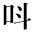
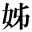

| 神秘的半獣主義 | |
| 岩野 泡鳴 | |
| (2012) | |
神秘的半獸主義
岩野泡鳴
目次
神秘的半獸主義
議論は相合はぬ節多けれども、
常に小弟を勵ます益友、
木村鷹太郎君にこの著を献ず。
僕、一席の演説を依囑せられ、その原稿を書いて居ると、この樣に長くなつてしまつたので、雜誌に掲載することも出來ず、止むを得ず一册として出版さすことにした。
曾て、博士三宅雄二郎氏、『我觀小景』を公にせられて以來、わが國に於て、同氏の如く哲學上の荒蕪を開拓して、自説を發表し、且之を持續體現せられたのは、愛己説の加藤博士、現象即實在論の井上博士、並に無神無靈魂説の故中江兆民居士だけであつたかと記憶して居る。その諸説の由來と可否とはさて置いて、かういふ篤學諸氏の驥尾
［＃入力者注(6)］に附して、僕が一種の哲理を發表するのは、少し大膽過ぎるかも知れないが、僕には僕の思想が發達して來た歴史もあるので、別に憚るまでもなからうと思ふ。僕がこの十餘年來、友人の間に、はじめは自然哲學と稱し、なか頃空靈哲學と唱へ、終に表象哲學と名づけるに至つた思想が、この書中に現はれて居るのである。
附録の諸篇は、僕が折にふれて種々の雜誌に出した演説、論文等の中から、本論の不備を補ふに足る分だけを寄せ集めたのである。
明治三十九年四月二十日
東京にて
岩野美衞識
僕は議論を好まぬ、拾數年以前、詩を作り初めてから、議論は成るべく爲ない方針である，然し、世間の人は詩を了解する力が乏しいので、詩には遠から現はれて居る思想でも、單純な理窟に成つて見なければ目が覺めないのは、如何にも殘念なのだ。近頃、身づから救世主であるとか、あらざる神を見たとか、大眞理を發見したとかいふものが出て來て、宗教と哲學とに深い經驗のない青年輩は、如何にもえらい樣に之を云ひ噺して居る。――僕は前以つて斷つて置くが、そんなえらい人々と競爭するつもりではない、ふとしたことから智識慾が燃えて來たを幸ひ、たゞ僕の立ち塲を知人と讀者とに明かにするばかりである。
或友人があつて、僕の詩に段々神秘的趣味が加はつて表象的になるのを見て、メーテルリンクに氣觸
れて來たと云つた。實は、僕には自分に發達させて來た思想があるので
、そう云はれるまではメーテルリンクを讀んだことはなかつたのである。早速、他から借りて讀んで見ると、なか〳〵面白い，十數年前から、自分の頭腦に染み込んで居る思想がずん〳〵引き出されて來た。自分の思想と情念とは、エメルソンの賜物が多いので――一しきりは、英文を作ると、エメルソンの眞似だと、外國教師から笑はれた時もある位である。今日の考へは、その當時から見れば、變遷して居るにせよ、エメルソンから刺撃を受けて進歩して來たのである。エメルソンは僕の恩人である。
ところが、メーテルリンクの論文を讀んで行くと、一篇の構造振りから、思想の振動して居る工合までが、大變このコンコルドの哲人に似て居る
。僕は十年前の知己に再會した樣な氣持ちがした。不思議だと思つて讀んで行くと、エメルソンの語までが引用に出て來たのである。――僕は愉快になつたので、その書の持ち主へ手紙を書いて、歐洲近時の文壇にも、自分と同意見者のあるを好
みすと云つて遣つた。尤も同意見と云ふよりは、同趣味と云つた方が善い。
その時は他に旅行をして居たので、歸京してから、友人に會つて見ると、その友の話に、僕は知らなかつたが、メーテルリンクは三人の感化を特に受けて居る――それはノワ゛［＃底本では「ワ゛」は一字］リスとエメルソンとスヰデンボルグとであることが分つた。僕は第一者の作を知らない、第二第三のは知つて居る。エメルソンは、隨分、スヰデンボルグといふ神秘的宗教家の感化をその作から受けた，して、メーテルリンクはまたエメルソンからの感化を受けたのである
。
メーテルリンクと僕とは、思想上の兄弟分である
のが分つた。それから、また、メーテルリンクの劇『アグラベーンとセリセツト』の英譯を見ると、その序文にマツケールといふ人が云つてある，『モーリスメーテルリンクは、「賤者の寶」（その論文）で見ると、公然たる新プラトーン學派の思索家、神秘家であつて、
飽くまでエメルソンに浸
つて
、且、プロチノスとスヰデンボルグとから靈感を得て來た者らしい』と。プロチノスとは、乃ち、新プラトーン學派の人であつて、エメルソン並にスヰデンボルグも好んで引用した神秘家である。
そこで、先づ、僕の意見を述べて掛るのが本統であらうが、僕は至つて議論が下手である――友人は明確な論理を以て居ないからだと云ふ。自分もそうだらうと思つて居る。然し、これは耻づべきではない。ヘーゲルの哲學の樣に、論理その物が殆ど宇宙の生命であるかの域に達して居ても、尚傳へ難いところがあるので、シヨーペンハウエルは別な方向を取り、ハルトマンの如きもヘーゲルを利用したに過ぎない。
論理といふものは、最も明確であつても、繪で云つて見れば、寫眞以上の事は出來ない。寫眞は小いながら景色を間違ひのない樣に見せるが、それ以上の範圍又は内容を示すべきものではない，繪畫となれば、然し、その出來上つた幅面に、或捕捉し難い意味を活躍たらしむることがある。
論理では、到底、神秘は説けない
。その説き難いところは、乃ち、藝術の威嚴が生じて來る範圍である
。然し、議論をする以上は、それが下手だと云つても申し譯にはならない――先づ、他の三家を論じて行くうちに、神秘の紫を溶かして置いて、それから僕の
半獸主義即刹那主義
の色を染めて行かうと思ふ。僕に取つては、これは久し振りの議論であるので、云ひたいことは序に何でも云つてしまうかも知れない。
今一つ云つて置きたいのは、太陽に出た長谷川天溪氏の『表象主義の文學』――これは、帝國文學に出た片山正雄氏の『心經質の文學』並に早稻田文學に出た島村抱月氏の『囚はれたる文藝』と共に、心血を注がれたと思はれる近來有益な論文であるが、創作の上から表象派の文學系統を辿られたので、且、メーテルリンクに至つて、あまり論じて居られないから、僕が、この論文の前半部で、渠の思想に最も密切な感化を與へた哲理家の系統を述べるのは、衝突でもなく又重複でもあるまい。それに又、メーテルリンクをその論文『近世戯曲』で見ても、イブセンの影響が隨分ある筈だし、また英國エリザベス時代の感化が非常にあるのは、マツケールも頻りに云つて居るが、それは渠の創作の方面であるので、僕の論文の性質から、そう云ふ問題はあまり云はないつもりである。
今、
近世神秘家の系統
を、第一、スヰデンボルグ，第二、エメルソン，第三、メーテルリンクと定めることは、差支へあるまい。もつとも、スヰデンボルグが神秘派の開祖でもないし、エメルソンは神秘家と稱したものでもないが、最近のメーテルリンクから神秘説の道筋を辿つて行くと、大體はそうなるのだ。この本流には、種々大小の流れが這入り込んで來て居る
――シエリングの無差別哲學、ヤコブベーメの未生神分裂説、プロチノスの發出論、プラトーンのイデヤ説などで、それに東洋へ來れば、ペルシヤ、印度などの哲學はすべて神秘の色を帶びて居るのである。――僕が云はうとする
神秘は丁度瓢簞
の樣なものであつて、その上部のふくれはスヰデンボルグ、下部のふくれはメーテルリンク、この兩部の眞中を締めて居るのはエメルソンである。
先づ、メーテルリンクから初めよう――エメルソンの方は、近頃の青年はあまり知らないので、メーテルリンクを紹介されると、直ぐ驚いてしまう樣だが、エメルソンの哲理を知つて居るものには、メーテルリンクの價値は半
する譯である。然し、前者の詩となれば、全く散文的でお話にならない。近頃少し氣がきいた批評家は、新體詩を見て、この行は詩的だが、かの節は散文的だなどと云つて、その詩全體の發想振りが見えない。これはまだ詩その物に打撃を加へたのでないが――そう云ふのと違つて、エメルソンの詩は全く散文的と云つても善い，一口に云へば『何を歎くぞ、馬鹿者よ、この世は樂く送るべきものだ』と、かう云ふ調子である。之に比べると、メーテルリンクの戯曲はさすが神秘的であつて、論文に云つてあることがその曲中にも活きて居るが、論文その物の思想は大底エメルソンとスヰデンボルグとから出て居るのである
。
さて、メーテルリンクは、
一種の生命
を説いて居るのが、その論文の生命である。これに形容詞を加へて見れば、最高生命、絶對生命、神聖生命、超絶生命など云へるが、――エメルソンの哲學はまた超絶哲學である――これは外存的事實ではない、
超官能的内存の眞理
であつて，朦朧たる境界線、乃ち、僕等の意識と無意識との境界線上に起る情緒に包まれて居て、心靈はそこを隱れ家として居る。
神秘的作用はこの眞理から生ずる。夢に要素があるとして見れば、人間は乃ちそれと同じ要素で出來上つて居るので、自分と自分の周圍とには、神秘が充滿して居るのであるから、人間の知力では、その實體を時々瞥見することが出來るまでゞある。
知力の根源となつて居る官能が粗雜であるので、知力では到底、滿足なところまで、神秘の世界に入り込むことは出來ない
。意志に就いて云つて見ても、自分がかう爲ようと思つたのは、そう思ふ樣に必然的動機が祖先から傳つて來て居たからで、自分はたゞ分らないところへ分らないながら這入つて行くのである。
神秘界は、畢竟、情を以て闇の中に感じる外はない
ので、そこに美もあるし、面白味もあるし、生命もあることになる。
僕がたとへば一愛人を得たとする。その得たのは、自分が自分の自由意志を以て撰定した樣だが、その實、之に施す接吻は、幾多の靈が、自分の知らないうちに、行はうとして待つて居た接吻である。この遺傳はたゞ現世の祖先からばかりではない、數千世紀の以前から、無形の間に傳つて來る。
遺傳と意志と運命と
、これがメーテルリンクの神秘説を一貫して居る要目であつて――過去は遺傳で以つて僕等に傳はるし、僕等の未來は運命が既に定めてある，この間にあつて、意志が現世を抱いて深い海の底に沈むとすれば、たとへば一つの小い島の樣で、前後二つの和合しない大海が、その岸邊に寄せ合つて、互ひに嚙み合ひをする。僕等の靈魂内はまことに騷々しいものだが
、
無言――神秘の星
――があつて、その上に住つて居るので、之が甘く統御して行く
。これは純粹無垢の情緒を以つて感じられる世界である。無言の星が神秘の夜空
に輝くと、遺傳も運命もそれから出た光線の一部に過ぎない。
僕等を制限するものは運命であるので、僕等が獸的であれば、運命も獸的となる，僕等が靈的となれば、運命も靈的である。これが
神秘的自我の發現
する工合である。自我が無言のうちに最も發揮せらるゝところから、メーテルリンクは悲劇にスタチツクトラジエデイ、乃ち、
靜的悲劇
を發案した。芝居を少しも動作を爲ないで、心持ちばかりで見せるので、――つまり、有形の動作がなく、無形の事件のうちに、一種の靈果を感じられる樣に爲やうと云ふのである。これは畢竟空想に過ぎないとしても、渠の戯曲には、この表象的作法が至るところにあらはれて居る。メーテルリンクに據ると、人の日々の生活上に見える悲劇的要素が、眞の自我に對して、頗る自然的で而も切實である度合は、臨時の大事件に包まれて居る悲素よりも、遙かに多いので
、
渠の詩材は平凡な事件に取つてあつても、悲莊なところがある
。『インテリオル』の樣に、一家團欒の間へ、外部から娘の死の知らせが這入つて行く樣子や，『イントリユーダー』の樣に、盲目の老爺の心中へ、二階の下から、段々死者の靈報が響いて行く工合や，長篇では、また『プリンシスマレーン』の如き、前二篇と同じ樣に構成上の缺點はあるが、すべて
運命劇の特色
を帶びて居る。劇に就ては、あとでまた自説を述べる時に云ふこともあらう。
以上は、僕が讀んで、自分の考へて居た事抦を胸中に呼び起したので、甚だ面白く思つたのだが、メーテルリンクはそれ以上の事は分らないと云つてしまう――然し、これはノスチツク學派や不可知論者の云ふのと違つて、知力的ながらも熱烈な想像を以つて這入り込むので、哲學者等が、確實だといふ論理を以つて、わざ〳〵天地を狹く限つてしまう樣なものではない
。耶蘇がその弟子に向つて、眞理は今はおぼろげであるが、あとでは、顏と顏とを合せて相見るやうな日が來ようと云つた通り、神秘はいつも生命となつて世に殘つて居るのである。
メーテルリンクは法律家であつて、その業務の傍ら、論文と作劇とに從事して居たが、『モンナワンナ』を作つてから、その作劇上の資才が見とめられる樣になつたのである。渠の所論には、僕も亦云ひたかつた點が多いのであるが、それではエメルソンは僕等とどう云ふ關係になつて居るか。メーテルリンクのエメルソン論が、去年の『ポエトローア』に出たが、まだ見ないのは殘念だ。
メーテルリンクが、情を以つて入る外には、現在の人間が理解することは出來ないと棄てたところを、エメルソンは一個のコンベンシヨン、形式を以つて解釋が出來ると云つて居る――その形式は
唯心論
である。
唯心論と云へば、哲學者等は古いと笑ふだらうが、エメルソンのは少し違つて居る。渠は唯心論その物を證據立てようとして齷齪するのではない
。たゞそれを發足點として、それ以外又はそれ以上のことを云つて居るのである。若し唯心論が成り立たないとすれば、エメルソンの思想は論理上の根據は無くなるだらうが、渠自身の價値は變はらない――エメルソンの唯心的論理は形式であつて、その生命とするところは別にあるのだ。
その文體を見ても分る、短刀直入、アービングの樣な形容詞を避けて、實質のある名詞を使ひ、ピリオドだらけの兀々
した文で、句々節々の關係が、そう甘く三段論法には行つて居ない，文章はあまり分る樣に書くと、讀者は却つて要點を見のがしてしまうから、その要點に止つて暫く考へさすのが必要だ
と云つてある。エメルソンは暗示的であつて、以心傳心的に僕等を刺撃するところがある。渠の暗示と刺撃とを受け取れば、もう、その形式と方便とは弊履と同樣棄てゝしまつても善いのである。
『自然論』八章――序論を合せて九章――は、僕、以前から飜譯して持つて居る位だが、自然を我に非らざるもの凡てと見て、始つて居る。非我なる自然は、その個々別々の状態に於ては粗雜なものであるので、詩人の立脚地から、全體を一つに見なければいけない。そこで、エメルソンは
純全觀念
といふことを主張した。たとへば、僕等が郊外に出る、そしてあの山は太郎作のだ、この森は權兵衞のだ、向ふの畑は丑松のだと見るばかりでは、何の美もない，美は野山全體の景色に浮ぶので、これは誰れの持ち物でもない、たゞ詩人の胸中に所有されて居るのだ――これが乃ち純全觀念である。
この純全觀念に映つて來る自然が、宇宙の大原因に進むには階段がある。エメルソンは之をユース、方便
と名づけた――第一、物品，第二、美，第三、言語，第四、教練。
第一の
物品
とは、自然から授かつて、すべて僕等の官能上に役に立つて呉れるもの。これは、人間を養ふものだが、之に養はれるのが目的でない――養はれて、それから向上的活動をするのが目的である。
第二は、
美
を愛すること。希臘
［＃入力者注(6)］人は世界をコスモス（Κοσμοσ）と呼んだが、これは同國語で格好、秩序、又は美といふ意味から來て居る。エメルソンは耳から這入る音樂の美を忘却して居るので、僕もこゝでは略すが、目は最高の建築家であれば、光は第一等の畫工であると云つて居る
。
それで、美の状態を三つに分けた――單に
自然の格好
を見るのも樂みだが、一段進めば、
男子的美
、乃ち、人間の意志と結合して來た時の美がある。たとへば、レオニダスとその三百の兵士が、國家の犧牲となつて、サーモピレーの山間に倒れて居るところを、太陽と月とがそれ〴〵照らした時，また、コロムバスの船が、萬難を冐して、西印度の一島に近くと、岸には、之を見た土人等が、甘蔗葺きの小屋から、ばら〳〵と逃げて行くのが見える、うしろには洋々たる大海を控へ、前には紫色の連山が横はる，すべて斯ういふ時には、この活畫から人間を離して見ることは出來ない。意志を以て立つ天才の周圍には、人物でも、學説でも、時勢でも、自然でも、すべてその天才と融和してしまうのである
、美の今一つの状態は、
知力の目的
となつた時で――知力は好き嫌ひの感情をまじへないで、事物の絶對秩序、絶對の理法を求めて行く。意志に伴ふ美は求めずして來たる
實行美
、善である，知力がわざ〳〵求めて行く美は、乃ち
眞理
である。エメルソンも亦例の眞善美合一論者で、――成る程、この三者を別々に考へれば、つまりはそう云はねばなるまい。
それで、思考上の美と實行上の美とは、同じくないところがあると同時に、また相補つて行くので――丁度、動物が食ふ時と働く時とがあるに似て居る。心靈には美を求むる慾があつて、僕等はそれを滿足させなければならない。自然の美は人の心中に這入つてから改良せられ、たゞ乾燥無味な思考の爲めではない、一段新しい創造となるのである
――美は乃ち再現せられて、藝術となるのだ。この藝術があつて、心靈の美慾は滿足するのである。かうなつて來ると、自然――乃ち、非我――の美だけでは最終のものとは云へない、更らに内部的、内存的の美に入らなければ、最大原因に達することは出來ない。
そこで、方便の第三、
言語
を説いてある。人間の話す言語ばかりではない、エメルソンの唯心論から云へば、自然その物は思想を表はして居る言語である。それに
神秘的個條
が三つある，
（一） 言語は自然の事實の表象である事。
（二） 特殊の自然的事實は、特殊の心靈的事實の表象である事。
（三） 自然その物は心靈その物の表象である事。
かういふところはスヰデンボルグに似て居る。たとへば、心の正しいとか、曲つて居るとかは、竹などの眞直ぐであつたり、くねつて居たりするのと同じで，また、胸と云つて情緒を表し、あたまと云つて思想を現はす。人間が單純な生活状態にある間は、すべて物質的、外形的の物を借りて來て、心靈的、内在的の表現をするのである。外界に見える状態は、必らず内心にもある状態で
――怒つて居る人は獅子で、狡猾な人は狐で、泰然自若として居る人は岩の樣である。小羊は無邪氣、蛇は惡意、花は微妙な愛情を示すし、また、光と闇とは智と無智とを、熱は戀を、僕等が前後の風景一幅は、僕等の記憶と希望とを反映して居る。その自然の諸事物を別々に見ないで、前にも云つた純全觀念に統一してしまうと、乃ち、それが一大心靈の表象である
。之を思考的に云へば、
理性
その物であるが、自然に對照しては、心靈といふ方が善い。この心靈を世俗は神と名づけて來た。
それで、人が自分の心靈から出て來る思想に、適切な表象を結びつけるには、その人の品性が率直になつて、その觀念が純全になつて來なければならない。一たびそうなつた時には、言葉は水の流出するやうに出て來るのである。小供の時から森林の中や、大海のほとりに育つた詩人又は演説家は、その育つた時にはあまり氣に留めて居なかつた自然ではあるが、市中の喧噪な間に居ても、之を忘れて居ないので、さア一大事と來たら――たとへば、革命の起つた時など――少しもあわてることはない、泰然として居られるのは、全く自然の感化があるので――その自然の表象が、昔、朝の光に輝いた通り、今も記憶に映じて來て、目前に起つて居る事件を處分するに足るだけの思想と實行とに成るのである。
天才が一たび高尚な情操を潜
つて
び出せば、山河も鳴動する、草木も感泣する。かう云ふ力を得てから、初めて人心を制服することも出來る、また慰籍することも出來る。
歸するところ、外界の法則と内心の作用とは一致して居る
ので、『二一天作
［＃入力者注(6)］の五』［＃入力者注(7)］
は、直ちに之を倫理にも應用することが出來る。之を心中に應用すれば、その意味の範圍が廣くなつて、術語の拘束を脱するばかりのことだ。そこで、歴史にあつた事件は、必らず僕等の心にも起つて居るので――エメルソンの『歴史論』には、鼠
の寄り合ひを記録してないのは、歴史の本分を忘れて居るのだとまで云つてある。鼠の會議は國會の議事であつて、國會の議事はまた僕等の腦中の冥想となつて居るのである。
エメルソンが設けた自然に對する方便は、最下級の物品から進んで、美論となり、また言語的表象の事を論じてしまつたが、まだ第四の意義がある。
方便の第四は、自然は
教義
である、
訓練
であるといふ事で、今まで論じて來た三つの物は、すべてこのうちに含有することになると、エメルソンは云つて居る。自然は思考上の眞理を理解する爲めの訓練になるが、その思考にばかり訓練の功があらはれても、之を實行しなければ夢の樣なものである。時間、空間、勞働、氣候、動物、機械力等、すべて一般に自然に屬して居るものは、皆、毎日〳〵人間を教訓して呉れる。草木の種から枝葉と育ち上る工合も、海綿の樣な動物からヘーラクレースの樣な神人に發達する段階も、皆、人間に善惡の理法を教へ、十誡の意義を聽かせて居るので――神から見れば、すべての目的は新しい手段になつて居て、人は之をその用に從つて役に立てゝ行かなければならない
。
この教練に從つて造化の意匠が分つて來ると、高尚な情緒が起つて、僕等を擴張して呉れる、この
自個擴張
はインサイト、洞察に由らなければならない。『自然論』の序論には、近世の哲學者等が、この洞察力に乏しいので、宇宙を達觀することが出來ないで、かの科學者輩と同樣、部分〳〵の小研究にばかり拘泥して居るのを歎息してある。洞察に由つて天地の理法が分つて來ると、時空の關係はおのづから消えて行つて――エメルソンに據れば、理法は乃ち宇宙の大心靈と一致して居るのであるから――自分は段々大きくなつて、宇宙が却つて小い物になつてしまう
，否、宇宙は自分の實行力、意志と同一になる――
意志の實現
である。僕等が思想の圓滿な發表は、乃ち、こゝにあるのだ。かうなると、人は官能的事物を通り拔けて、不滅の教兒に化してしまうのであるが、こゝに一種高尚な疑問が起るに相違ない。――宇宙の最大原因はこれであつて、
自然といふ物は、もう、外形的に存在して居ないのであらうか
。
唯心論を一笑に附してしまうものは、たとへば、唯心論者の頰ぺたを張り飛ばして、その論者が急に怒り出すと、それが痛いか、お前の身體はもう無い筈であるのに、とからかつた例もあるが――そんなものではない、完全な唯心論ならば、何も外界を否定するには及ばないのだ
。心靈的理法は一貫して變はらないので、之につながつて居る僕等も、矢張り變はることはない。僕等は波上にたゞよふ船の樣ではない、依然として立つて居る家の樣だ。かう云へば、變化のあるので生活して居る株屋だとか、大工だとか、通行税を取るもの等は困るだらうが、論者には少しも不自由はないのである。
メーテルリンクは、僕等の官能が粗雜であるので、之を根源とする知力では、到底神秘界に入り込み難いと云つたが、エメルソンはまた、官能が明確にならない限りは、世界を上から見て、唯心論的に説明して置くべきものだと思つて居た。鈍根のものには、自然はたゞ官能的に見えるばかりだが、理性の發揮して來るのと、意志の奮興して來るのとで、僕等は官能的壓制をのがれることが出來るから、自然の輪廓と表面とは透明になつて、もう見えなくなつてしまう
。
その代り、一貫した理法が見えて來て、そのまた理法が心靈と合體してしまふのである
。
エメルソン自身の證明
は、五つに分れて居る。渠が唯心哲學の第一の定めは、
自然その物から受くる暗示で
――たとへば、船に乘つて行きながら岸を見たり、また、自分の胯の下から野原をのぞくと、いつも見馴れて居る景色でも、大變違つた樣に見える。この時は、物心二元論の立ち塲に住して居る樣だが、然し、世界が一つの觀せ物であると同時に、自分の心中には、一種不易のものがある樣に思はれる。
第二に、
詩人は之と同じ樣な快感を傳へて呉れる
。たとへば、海なり、山なり、少女なり、豪傑なり、世間一般に知られて居るものに、僅かの意匠を加へると、そう云ふ物が、詩人の根本思想を軸として、自由な回轉をして、全く新しいものとなる。これは、その詩人の思想の表象となつてしまうのである
。シエキスピヤはかういふ想像力に富んで居たので、萬物を自由に丸めて、自家藥籠中のものとした。詩人に取つては、ピラミツドも新しくツて、また移し得べき物である。乃ち、詩人がその盛んな情熱を以て、諸事件の間に心靈的親和力を見とめ、世界の重大な現象を自由に取り扱つて居るのを見ても、心靈の力は偉大なことが知れるのである。
第三に、詩人はそういふ風にして美を目的とするが、
哲學者は眞理
を目的とするので、萬物の秩序と關係とを自家の思想中に組み立てゝしまう。プラトーンが云つた通り、『哲學の問題は、條件附きで存在して居る事物の爲めに、無條件絶對の根據を發見してやる』のである。エメルソンは、之を詩人に劣らない偉業として、心靈力の證明に入れてある。――尤も今日の樣に、哲學者となるべきもの等が科學に降服して、あツちの實驗室、こツちの講堂で、重箱の隅をほじくり合つて居るのは、斷然取らないのである。
第四に、
心的科學をやつて居ると、どうしても、物質の存在を疑ふやうになる
――之を疑はないものは、もう、形而上の探究に向いて居ないものである。苟もこの疑問に到着すると、必らず不滅、必然、自存の自然物――云ひ換へれば、諸觀念――に注意することになるだらう。プラトーンはこの觀念に向上的階段があると思つて居たが、兎に角、觀念の前へ出ると、外界は影か夢かの樣になつて、自然は心靈に歸してしまう。そうなれば、世界は
一大靈物
の思想が現はれて居るのだと分る。――この大靈物とは、エメルソンの論文が至る處に歸着する思想である。
第五に、
宗教と倫理
――これは、前者は神に對する義務を、後者は人に對する義務を教ゆる違ひはあるが、自然を足下に踏みにじつてしまうのは一つである。プロチノスは――これは、メーテルリンクも好んで引用してある神學者だが――物質を甚しく忌み嫌つた極、自分の身體を耻ぢて居た位だ。見える物は移り變はる物、見えない物は久遠だといふのが、宗教の最初であつて、また最後の教へである。――尤も見える、見えないと區別するのは、詩人から云へば、をかしな方便ではあるが、宗教家は見えない物に心靈の意義を附して行くのだ。
以上は、エメルソンが唯心論を證明して居る件であつて、論理上から云へば、あまり平凡な樣だが、僕等の受ける教練には、すべて唯心論の色が染みて居るので、自然なる物の位置
さへ定まれば、この論が宇宙の事物を説明するのに一番便利だといふ譯である。
自然の位置！
これに就ては、メーテルリンクは別に哲學的根據となる程の言葉を云つて居ない樣だが、僕の意見を云ふ時、尚兩人の説に及ぶとして，エメルソンに據ると、思考的理性と實際的理性、云ひ換へれば、哲理と徳行とは、おのづから唯心的傾向を來たすもので――思想の光に照らして見ると、世界は常に現象的であるが、徳行はこの現象的なるものを制服して、内心に向けてしまう。
エメルソンの唯心論は世界――自然――を一大心靈のうちに見たのである
。
先きに非我と定めた自然は大我のうちに融和するので――それで、自然が全く無くなつて居るのかといふに、そうでもない。かうなると、大乘佛教の面影も見えて、世界は神聖な夢であつて、その夢の中にあらはれて居る自然は、心靈が百尺竿頭一歩を進めて、下方へ權化したので、心靈から云へば、その無意識的射影であるのだ
。僕等は乃ち神の落ちぶれたので、自分から現在の樣な姿になつたのである，自分等から太陽も月も流出したので、男子から出たのが太陽となり、女子から出たのが月となつた。それが何たる不敏だ、今では月と日とを拜んだりするものとなつてしまつた。然し、自然の理法が僕等の本能に働くと、本能は、プラトーンの所謂想起説の樣に、その働きに由つて、僕等を段々小我から解放して、たとへば盲人が視力を恢復して段々光に接して行く樣に、心靈の力が活躍して來るのである。
僕等が大心靈に合體してしまへば、もう、それが極致であるが、それまでの道行きは
崇拜の念
を以つて爲なければならない――また、必らずそういふ道念が生じて來る。人は心靈といふ説明し難い物のことを考へると、その考へが進めば進む程、之に就いて語ることが少くなると、エメルソンも云つて居るが
、
無言に至つてその極に達するのであらう
。
これは『自然論』の要點であるが、心靈その物の解釋は何處
にも見えて居ない。エメルソン自身もその思想が進歩するに從つて、論旨に滿足しないところが出來たさうだが、そんなことはかまはない。メーテルリンクが渠の議論から自分の考へを引き出して行つた跡が分れば善いので――メーテルリンクの所謂『暗い運命』は、エメルソンの樣な歸本説では、『明い運命』となりかゝつて居る差はあるが、例の知力で實體なる物が解釋の出來ない限りは、後者の所謂『大心靈』に至つて、前者の所謂『無言』はその絶頂に達するのであるし，兩者が宇宙を全く表象と見て居るのも同じで、たゞ、特に神秘を稱道したメーテルリンクは、エメルソンの樣に知力を以つて之に突入して居ないところが違ふばかりである。讀んで居るうちに、段々論理を離れて、僕等の思想を何となく深い、幽暗なところへ引つ込んで行く傾向のあるのは、僕の非常に嬉しいと思ふ點だが
、
これが兩者の詩的生命になつて居るのである
。然し、エメルソンはさすが哲學者肌であるが、メーテルリンクは――その創作に關しては尚更らだが――飽くまで情の上に殘つて、知力をまでも情化する詩人の本色を存じて居る。
今少しエメルソンの特色と神秘的傾向とを云つて、それから、兩者の思想に大感化を與へて居るスヰデンボルグの事に移らう。
エメルソンには格言的文句が多い。『たとへ地獄は地獄の下に開らけ、學説は學説を排除しても、畢竟、すべては久遠の原因中に含まれて居る。』『あらゆる事物は表象的であつて、われ等が結果と呼ぶものも發端である。』『下なる理法は上なる理法の姉妹である。』『自然は高貴なものゝ爲めに存じて居る樣だ。』『多くの個人を研究すれば、われ等を原始的境界に導いて、そこには個人が無くなつてしまうか、又はその凡てが頂點に接觸する。』これは皆『代表的人物』から拔萃したのであるが、かういふ考へになつてからは、プラトーンを論じて、希臘人が均齊を愛したことや、定義に巧みなのを欽慕したり，ナポレオンを『惡大神』と罵倒しながらも、その勇氣と覺悟と行き屆いた手段と大常識とを稱揚したりしてある。
エメルソンの所謂心靈が、百尺竿頭一歩を進めた時の樣に、渠自身も亦發達するに從つて、小乘的見解から廻つて來たが、その『圓論』などではかう云ふことを述べてある，『
唯心論には段階がある
。われ等が最初に學ぶのは、之を專門學的に持て遊ぶので、磁石が一度玩弄物であつた樣なものだ。それから、最も樂しい青春と詩歌との時期に分るのは、それが眞理であるだらうと云ふこと、それが閃光と斷片とに於て眞理であることだ。それから、その面色が嚴格になり、莊大になつて、分るのはそれが眞理でなければならないことだ。』かうなれば、僕等の眞理は論理的となり、實際の行爲に現はれて來る樣になる譯である。
エメルソンは、思想の圓熟して來てから、『報酬論』を書いた。渠は米國に生れただけあつて、僕等に染み込んで居る武士道の立ち塲から見れば、一種厭な感じのする根性があると云へば云はれるが、この論を讀んで見ると、また、渠獨得の想が顯はれて居る。一口に云へば、宇宙は大海の樣なもので若し少しでも善惡いづれかの空處があれば、直きにそこへ應報なるものが流れて行つて、もとの通りに平均さしてしまうといふ説
である。その論中に僕等の心靈は、制限を受けないから、樂天觀を入れて、厭世觀を忌むものだと云つてある。エメルソンの思想が穩健で、着實であるところへ、唯心論といふ渠に取つては便利な形式を利用して、何でも分らないことはないと云ふ意氣込みであるので、自然と渠の天下が天平になつて、青年は悲嘆してはならない、すべからく太陽の樣に麗はしくなれと云ふに至つたのは、當前なのであらう。
然し、渠は初めからそう云ふわけではなかつた
。
その實際の經驗から、烈しくなつて來た悲觀の反動が、一方の極端まで樂觀に進んだのである
。一たび世間の眞相に觸れたことのある人々には、必ず僕の云つて居ることが實際であるのだ。メーテルリンクも『星』といふ文中に云つてある通り、『世紀毎に別な悲愁を抱きしめるのは、世紀毎に別な運命を曉るからである。』僕等が最も深い悲愁に沈んで居る時ぐらゐ、自我の發揮して居ることはない
。抱月氏の所謂『赤い火』に對して、『青い火』が最も盛んに燃えて居る時である。僕等が悲愁の偉大になるに從つて、自覺の力が振つて來て、僕等の自我が擴張する。これ、我を物外に解放する時であつて、心靈その物の生命がこの時急流となる。エメルソンに據つて云つて見れば、『人生の最も善い刹那は、高等の心力が愉快に目覺めて來る時で、この時には、自然は尊敬を以つて神前を引き退いてしまう。』かう云ふ刹那を觀ずると、悲愁のうちにも快感を覺えるのである
。この快感の方面から、若し樂觀が出來るとすれば、それは
悲的樂觀
とでも稱すべきものであらう。
僕の考へでは、有限の人間には、悲愁は運命の樣に心底に横たはつて居るので、その上を樂觀するのは、或形式を以つて來て蓋をしたと同前
で――エメルソンの樣な人は意志が強くて、自分の肺病を自分で直した位であるから、たゞ無理にでも、外形ばかりは、純粹の樂天觀を以つて押し通したのであらう。
エメルソンが煩悶をした跡は、どの論文を見ても分る
――特に『代表的人物』で分る。プラトーンがその當時の東洋の冥想と西洋の實際的思想とを結合して、かの幽妙な獨創説――世界はイデヤ（ιδεα）の權化であつて、之を想ひ起すに從つて、われ等は實體に歸して行くのであるといふ説――を建てたのに感服したが、如何にもその獨斷であつて、その學説の不完全、非自證的な點が分るに至つて、モンテーンの樣な懷疑家に走つた。
人間は、分らなくなると、萬事が不可解となる、否、解かうとすることがもう疑はしくなるものである。萬事を疑ふなら、いツそモンテーンの樣に、思ひ切つて疑ふが善い
。――渠は最も正直な作者であると、エメルソンは云つてある。然し、同情がなくては人生の神秘は分りツこがない、手中の一世界は叢中の二世界よりも價値がある。前に引用してある通り、どうせ、地獄の下にはまた地獄がある，どんな學説でも、また倒れる時があるに定つて居るが、すべては久遠圓滿の大原因中に含まれて居るのだ――『たとへわが舟は沈んでも、それはまた別な海へ行くのである
。』と悟つてから、またシエキスピヤやゲーテの樣な文藝的慰籍者に走つた。
それから、また、『人は皆神秘家である』と云つて、スヰデンボルグに走り，また、ナポレオンを罵倒しながらも、その大膽であるのとその明確な頭腦とを揚言して、『何でも想像に訴へて、普通人力の限界を超絶するものは、不思議な程にわれ等を奬勵し、また自由にして呉れる
』と云つた。エメルソンの樣に自由な、規模の大きい頭腦では、政治家になりたかつたらう、軍人にもなりたかつたらう、釋迦や耶蘇の樣な實行家にもなりたかつたらう。然し、渠の性質が許さなかつた。詩人的要素を持つて居ながらも、プラトーンと同樣、それにもなれなかつた――渠には詩作はあつたところでだ。
渠は非常な思索家であつた。非常なだけに、眞の意味での詩を作る餘裕が無かつた
のだ。まして、その意氣込みはあつても、實世間に觸れる宗教家や、政治家や、軍人などになれやう筈がない。然し、哲學者としても、系統は立つて居らないのである。たゞ探求的、暗示的精神の非常に活動して居るところは、普通の詩人や俗務家の熱心どころ
ではない。カライルの『過去と現在』が英國で出版されると、エメルソンは直ぐ有益な著書だと云つて、之を米國で飜刻させたのは、天才が天才を知るのが早かつたのである。この事件があつてから、十九世紀の二大思索家が、大西洋を挾んで、プラトニツクラブに沈んだのはなか〳〵面白い事ではないか。
エメルソンが超絶哲學を唱道して、同志と共に雜誌『日時計』を發行したり、また諸方を遊歴して、自分の哲學を講演したりした時代のことを思ふと、丁度、ロセチ等のピーアールビー［＃入力者注(8)］
の運動の樣であつた。ロセチは畫家と詩人との間を彷徨した人で、エメルソンは詩人と哲學者との間に隱見した人だ
。前者は、古典派の文藝があまり形式に流れて來たので、その目的が眞率でなくなつたのを憤慨して、奔放派の特色を發揮したのだが，後者は、また、科學萬能主義の傾向が哲學界にも這入つて來たので、その研究の方法が非常に眞生命に遠ざかつて行くのを遺憾に思つて、超絶哲學なるものを叫び初めたのである。哲學と云ふ以上は、矢張り知力を以つて從事する探究家の態度ではあるが、そのうちからメーテルリンクの樣な詩人が、文藝上の神秘的思想を拔き取つただけの内容があるのは、僕が今までに云つたことで分るだらうと思ふ。エメルソンは長生きした方だが、年取つてから自分の家の火事に會つて、急に驚いたせいか、記憶力がまるでなくなつてしまつて、詩人ロングフエローが死んだ時など、葬式の塲で、親友の死に顏を見ても、『これは親しい友人だが、その名を思ひ出すことが出來ない』と云ふ程になつてしまつた。
僕は、十二三年以前に、二年間程、エメルソンを聖書の樣にして讀んだことがある。そうなつたには、少し譯があるのだ。それよりもまだ以前のことで、丁度、憲法發布の時期が近づいて來た頃であつた、僕は政治上にも小供の時からの野心があつたので、そう云ふ方面の書物をも讀んだ。その頃、綾井某――後に代議士にもなつた人――が開かせて居た大きな貸本屋が京橋にあつて、その店の英書目録を見ると、『ザ、レプレゼンタチブ、メン』といふのがあつた。これがエメルソンの『代表的人物』とは夢にも知らなかつたので、代議士論だと思つて、それを借りて來て讀んで見ると、ごつ〳〵した文で、六ケしくツて、一向分らなかつた。それで返してしまつたが、暫く經
つてから、當時の高等中學校に居た友人が來て、お前の書く文章は教科書中にあるエメルソンの文に似て居るぞと云つたので、先に貸本屋から借りた書の作者が確かエメルソンとあつたと思ひ出して、それからエメルソンを讀み出したのである。一日掛つて、たツた一節位が關の山――その苦心の度は、今日、僕が教へたりする學生の樂な勉強とは違つて居た。
その頃から、僕の思想上に大變化が起つた
――尤もこれは、エメルソンを讀むのは危嶮だといふ宗教家輩から云へば、渠の影響が覿面
［＃入力者注(6)］に來たのだと嘲るだらうが――早くからたゝき込まれて居た、耶蘇教の神が分らなくなつて、之を棄てゝしまつたし、また自分の愛して居た少女が理想のものでなかつたり、一親友が急に死んだりしたので、精神は非常に錯亂して來た。それに、家の關係上、文學に少しでも手を出すなら、學校生活は續けられなかつたので、某校で理財科を終つてから、政治科をやらうと思つたのを斷念して、仙臺へ行つた。政治家になりたいなどいふ考へは微塵もなくなつて、それからといふものは、專ら詩的修養をするのが自分の生命になつた
が、その時は毎週の自修科目を時間に割り當てゝ、萬葉集と詩經とシエキスピヤとミルトンと獨逸語と希臘語と梵語とを研究した。梵語研究などは、金がなくツて、道具が揃へられないので直
き中止をしたが、その間にでも、エメルソンは最も面白いので、毎日一回づゝ出て來た科目はこればかりであつた。
そこで、當時、エメルソンを樂天家だとは知らなかつたのである
。たゞ字引と首引きで讀んで行くうちに、無性に自分の精神が引き立つて來て、もう、絶望と死の苦みとを感得したと思つて居る自分に取つては、句々節々があらたの悲愁を養つて呉れるやうで、それがたゞ愉快であつたのだ。二年程經
つうちに、エメルソンの形式的方面が厭になつたので、斷然棄てゝしまつたが、その同情的精神の沈痛なのには、當時、自分の頭腦と胸奧とはかき亂されて、また整へられて居たのだ
。或時など、廣瀬川といふ川のほとりに坐わつて、エメルソンを讀んだが、秋の日はもう沈んだあとで、閑寂のうちに川水の響が何となく奧ゆかしく聽え、ゆふぐれの景色は惻々われに迫つて來た。これは丁度僕がエメルソンの暗示に接する時の樣で、手にした全集のおもては、薄暗い空を飛びかふ夜の羽がひと一緒になつてしまつた樣であつた。そこへ二つ三つ飛んで來たものがあつた。驚いて見まはすと、向ふ岸から小供が二三人、僕を目がけて、狸だ〳〵と呼んで、石を投げるのであつた。――エメルソンはつひに、僕を、狸と呼ばれる程に、幽暗なところへつれ込んだのであつた
。
渠を讀んで利益のあるのは、僕等の思想を獨立さして呉れるし、僕等に獨創の見地を發見さして呉れるからである。厭世とか樂天とかいふことは、かれこれ云ふまでもない。
その文體
をたとへて云へば、一條の流れが涓々
［＃入力者注(6)］として走り來つて、灣曲また灣曲、渦を卷いてみどりの淵になると、堤上に生へて居る灌木の影を浸して、その深い穩かな水面がまゝ破れて、大きな魚の躍如として跳ね飛ぶことがあるのに似て居る。
乾燥無味、内容のない樂天家には、到底エメルソンは分らないのである
。僕等の心裡に起つて來る各事件を貫いて居る悲愁を、自分が深く實驗した上、これでは凡人を教へられないと悟つて、無理にも樂觀してしまつたのであるから、渠の樂天觀は素直でない、その唯心論と同樣、方便に過ぎないのである
。こゝに一つ、僕が『代表的人物』を讀んだ時に、そのふちへ書いて置いた覺へ書きを拔いて見よう――これは寧ろ渠の云つたことで、今の僕が持つて居る考へだといふのではない，
『人物の要は天眞を發揮するにある、原因の化身にある、未然の前兆にある、進歩の一里塚たるにある。その首を天の川の流れに洗つて、その足は地獄の床を踏んで居る。然し、一たびわれ等の理想界に這入つて來れば、純潔な平民でなくてはならない。』
その頃は、大分エメルソンを讀んだ人が多かつた。山路愛山氏が自然論といふ少し長い文を書かれたり、『文章は事業なり』など云はれたのも、このコンコルドの哲人の同じ論や、『代表的人物』中のゲーテ論から出たやうであつた。また、『國民の友』記者の文體で、流暢だが、冗長であつたマコーレー式が、急にぽつり〳〵と切れる、含蓄のあるのに變つたのも、大部臭ひがあるやうに讀まれたのである。
そこで、エメルソンが僕等の悲觀の銀線を振動さして、メーテルリンクに見える樣な幽暗な面影を傳へたのはどうしてかと云ふに、これは、カントから糸口が出て、ヘーゲルの哲學に這入つた、絶對的主心論も與つて力があるだらうが、重にプラトーンを深く讀んだのと、東洋の思想を飜譯を通して見たのとが土臺になつて居るので、それにスヰデンボルグの人物が非常に感化を與へたのであるから、これから渠の事を論じて見よう。
『代表的人物』にも、スヰデンボルグを評論してあつて、その六名の人物中、他のもの――モンテーン、シエキスピヤ、ナポレオン、並にゲーテ――よりも、渠とプラトーンとは最も骨を折つて書いてあるらしい。これから、瑞典［＃入力者注(9)］
の神學者スヰデンボルグを、エメルソンの評論と僕が讀んだことのある英譯とに據つて論じようと思ふが，メーテルリンクは神秘説を唱へる者に過ぎない、エメルソンは非常に神秘的傾向があるだけのこと、然しこの人と來ては、その人物が面白いほど神秘家に出來上つて居るのである
。
スヰデンボルグはその當時の人には
一種の夢想家
に過ぎなかつたが、然しそれが最も實際的の生涯を送つたのは、第一、不思議ではないか。渠は一六八八年にストツクホルムで生れたので、幼時から、山や鑛山へ這入
つて、化學や光學や生理學や數學や天文學などの材料を探し、自分の變化が多い而も容量の大きい頭腦に適當する面影を求めた。小供ながら、渠は詩人ゲーテの樣に多方面の學者風であつたが、ゲーテがたしか鑛山技師にもなつたことがある樣に、渠は二十八歳の時、鑛山局の鑑定官
になつた。四年間、英、蘭、佛、獨の大學を歴訪したり、また、鑛山並に溶鑛業視察の爲め、歐洲諸國を巡廻したこともある。一七一六年から三十年間は、科學的著述に忙しかつたが、つひに神學の研究に熱中することになつたのだ。
その間に著述した大册は五十卷以上もあつて、過半は科學論であつた。
その時代
は、ハーベーの血液循環説が出て居た時代、キルベルトが地球は一種の磁石であると示した時代，近世哲學の開祖デカートが、『われ考ふ、故にわれ在り』と喝破して、つひに自然渦動説を唱へ、ニユートンが『プリンシピヤ』を著はして、引力説を建てた時代，ライブニツツはその實體論にモナド説を主張し、ロツクは英國に於て實驗哲學を唱道した時代である。スヰデンボルグは、かういふ大觀念、大思想の澤山流行した間に處して、尚嶄然たる頭角をあらはして居るのである。
スヰデンボルグの發表したのは、
合一哲學
とでも云ふべきもので――この思想はプラトーンどころではない、苟も思索に從事したものは皆持つて居たのである。古詩にもある、古い寓言にもある、ベーコンも知つて居たし、プロチノスやベーメの樣な神秘家は尚更ら知つて居たのだが、たゞ謎の樣に發表してあつたのを、スヰデンボルグになつてから、之に獨立的、科學的證明を與へたので、全く新しい色を帶びて來たのである。『歴史は繰り返す』といふ語が、近來諺の樣になつてしまつたが、渠に據れば、自然はいつも同一のことを繰り返して居るのである
。
脊骨のたとへ
で云つて見ると、その一端にはまた別な脊骨
、乃ち、腕がついて居る，腕の端には、また小い脊骨、手がついて居る。本脊骨の他端には、脛があつて、またその先きに足がある、これがまた別な脊骨の重なりである。手の指、足の指も脊骨の小いのである。人體の頂上には、また脊骨の丸まつたもの、頭蓋骨があつて、手が上顎で、足が下の顎で、手指と足指とは上下の齒である。それがまた心といふ體を以つて、新しい要素を食つたり、消化したり、分泌したりする。腦では、また、經驗といふ物を比較したり、取捨したりして、滋養の働きをする。また、新たに不思議な働きが起る、腦のうちでは男女の能力があつて、それが結婚もして居れば、兒を生みもして居る。かう云ふ風に、自然は螺線的に進歩をして、限りのないものである
。重力説もつひには形而上學の現象となるし、天文學もまた人の生命中に解釋が出來る樣になる。たゞ萬事萬物の働きが向上して行くのである。舌は小い舌の寄り合ひで、胃は小胃の集合，餓は小餓の、善は小善の集り。人は乃ち天の小いもので、大くなれば天と同一である。歸するところ、
物質界は心靈界の表象
となつてしまうのである。
曾て博士三宅雄次郎氏が『我觀小景』といふ書を著はして、宇宙は大なる人體であると云はれた。それでは分泌もやるだらうが、どこからやると、故大西博士が嘲つたが、故博士の樣に哲學史の迷ひ
――と僕は名づける心持ち――に這入つて居られた人には、到底こんな大膽な獨斷は出來なかつたのは無理もない。たとへ批評眼の鋭い者でも、一たび自分の説なるものが吐ける時が來たら、他人からは自分がやつたと同じ批評と冷笑とが來るのは、豫期して居なければならないのである。哲學の系統が立つたと思ふ時は、早や獨斷に這入つて居るので、よし又それが立つて居ないにしろ、自家に生命を與へて居る説なら、之を發表する勇氣が出て來るに定つて居る
。三宅博士の著が出た頃は、僕もスヰデンボルグを知つて居たので、或は渠の思想が、梨俱吠陀［＃入力者注(10)］
讃歌のプルシヤ（Purusha）、乃ち、『原人』とも譯すべき思想と共に、多少の影響を博士に與へたのではないかと、面白く讀んだことがある。
スヰデンボルグは、世界をかういふ風に料理して行くばかりでは滿足しなかつた。五十四歳の時、一種の靈的光明に接して、かの神夢を見たうらなひ者の樣に、欣喜雀躍、忘我の境に這入つてから、官能的世界を道徳的に説明し初め、科學的著述をやめてしまつた
。
内的視力
――エメルソンでは、之が洞察になつて居る――を以つて、他界の事物が見える、而も現世の事物よりも明白に見える、と斷言して居る。プラトーンの書に、最古の代には、今の人間よりも高等な人間が居て、神々に近く住んで居たといふ比喩があつて、これは佛教の『原人論』の思想とよく似て居るが，スヰデンボルグは之に追加をして、この原人ともいふべきものは、この世界を表象的に使つて居たので、天に對しては、渠等はこの世の事物は考へない、たゞその意義を考へたのだ
と思つたのである。エメルソンは、この思想を『自然論』に應用して、自然はその理法を洞察的に究めて行くと、透明になつて來て、全く心靈ばかりが殘ると云つたのであらう。
然し、エメルソンの實際生活上には、之をひねくツて、或時、客が『主人は居るか』と訪ねて來たので、自分で『居ない』と答へた，すると、客が『その聲はエメルソンではないか』となじつたので、渠はまた『エメルソンは今天の事を考へて居るから、居ない』と云つてしまつた位が落ちだが，然し、スヰデンボルグには、最も不思議なことが實際に起つて居るので、
神秘家の本領
を示めして居る。それは、三百哩も隔つたところの宴席に臨んで居て、そこから自分の住居地ストツクホルムの火事を見とめたことだ。その火事が自分の家から三軒目のところで止まつたことまで云つたので、人々が跡から之を問ひ合はして見ると、果してその通りに違ひがなかつた。これは有名な話で、當時の大哲學者カントも、その席に居て、大いに驚いたさうである。
少し話がそれるが、
スピリチユアリズム
といふものがある。之を信じて居る人の説に據ると、空間に一種の靈氣があつて、遠方に居る人の樣子などを通信して呉れる。これは、何でも、印度で生れた英國婦人が唱道し初めたのであるが、現今ロンドンで發行する雜誌、『評論の評論』記者ステツド氏は、頻りに之を應用して居るので――誰れでも善い、隔つて居る人の事情を知りたいとか、その人を呼び寄せたいとか思ふと、手に持つて居るペンがおのづから動き出して、それだけの働きをする。而も間違へることはないのである。これは、いつか、氏の雜誌で氏が詳しく書いたことがあるし、また
崎博士は大學で之を説明して居られるさうだ。
ステツドのスピリチユアリズムはどんなに明確な説明が出來るか知らないが、スヰデンボルグの樣な神秘的能力を以つて居た者が、あまり結論を急いだ爲めに、自然の事物を直接に神學的意義を有して居るものゝ樣に斷定してしまつた
。『動物界』では、動物體ばかりでない、すべての自然を經て、物質界は心靈界の表象であることを教へ，『天の秘密』と『示されたる天啓』では、心靈の世界、天使の天などで見て來た事を示めしてある。殊に最後の書の如きは、『ユダの支派
より出でたる獅子』ばかり解釋が出來るとしてある『默示録』――耶蘇教の神學者が絶望してしまう書――を解釋して、嶄新な意義を附してある。然し、嶄新だといつても、すべてその『天と地獄』の樣に、僕等から見れば、久遠の生命に入る準備ともいふべきことを、宗教の實行觀にあてはめたばかりで、たゞ平凡な宗教家の説明と違つて、スヰデンボルグ獨得の思想が固定してしまつたのに過ぎない。
渠の教義
に從へば、すべて物には物質的、心靈的の二方面がある，して、前者は後者の表象に過ぎない。この見解が非常に固定した形式を取つてしまつたのである。『新ジエルサレム、生命の教義』を見て分る，聖書の『エジプトは人にして神にあらず、その馬は肉にして靈にあらず』（以賽亞書［＃入力者注(11)］
三十一ノ三）とあるを解釋して、『エジプト』は人間の智慧から出た科學、『馬』はその肉的理解力の表象として、神がこの世に現はした物。――『人若しわれに居り、われ亦かれに居らば、多くの實を結ぶべし』（約翰傳［＃入力者注(12)］
十五ノ五）とあれば、その『實』とは、善を示めす爲めに、木に出來る物。――また、『木』は人、その『葉と花』は眞理の信仰を意味して居るし、美しい娼婦は乃ち虚僞のことを、ジエルサレムは教會を、アツシリヤは理性を、カルデヤは眞理の妄用を、バビロンは妄用された善を云ふのだ。
表象主義もかう極端に狹くなつて來ると、世界の歴史までが何だか重箱の中へ這入つてしまう樣に見えるではないか
。
エメルソンが『最も抽象的眞理は最も實際的なものだ』と云つた通り、スヰデンボルグがかう神秘的に又抽象的になつてからは、却つてその教へは單純で、卑近なものになつてしまつた
。物質と心靈とを別けるにも、善惡より外はなくなつてしまつた。惡事を罪として避けるものは心靈的になる、然らざるものは肉的である――信仰、眞理、貞節、眞率等は前者に屬し、殺人、姦淫、偸盜、僞證、色慾等は後者のものである。後者を去つて、前者に附くには、理性と自由意志
とを以つて、非常に奮鬪しなければならない。然し、理性は思想を導くばかりだが、意志は理性を導くことが出來る。その意志が向上しなければ、根本的に心靈と合一することは出來ない。かう云ふのが『生命の教義』に云つてあるところだが、宗教的に考へたら、これ以上のことは別に云へないだらう。耶蘇は『女を見て色情を起したるものは、その心既に姦淫したるなり』と云つたが、スヰデンボルグはこの意から推して、最も極端に、又最も嚴密に、善惡の區畫をつけたのである。僕が跡で云はうとする説によれば、然し、女を見て色情を起したからつて、何の罪でもないことになるので、渠とは丸で反對である。
要するに、スヰデンボルグは、プラトーンの樣に寛衣を着た學者ではない
、
赤裸々の實際家であつただけに、神秘家として見れば大變威嚴のあつた人である
。――先生と呼んで近寄ることは出來ないが、遠くから之を望んで崇敬すべき勢ひがある。それで、
その輪廻説
でも、昔は希臘の神話にも見え、プラトーンの想起説にも附隨して居るが、すべて客觀的であつたのが――尤も佛教では、消極的ながらも主觀的になつて居る――スヰデンボルグに至つて、意志に依つて如何ともなる積極的の主觀的となつた。人があつて、千年目にその靴を食ひ、その祖母と結婚したとすると、必らずまた千年目には、靴を食ひ、祖母と結婚するものがあるに違ひない
――否、人は各自の家と國とを造るのである。渠の考で云へば、犬の樣な所業をする人は既に犬と化して居るので、幽靈の樣な瞹眛な言葉を吐くものは既に幽靈となつて居るのだ。從つて、神を學ぶものは既に神である筈だが、これはユニテリヤンから出たエメルソンにはまだ許されようが、スヰデンボルグには古來の耶蘇教的形式があるので、そこまでは云へなかつたのだらう。然し、メーテルリンクが云つた樣に、『僕等はかうして、一度ならず、二度ならず、生れられる，而して、生れ更る毎に段々と少しは神に近づくのである』とは、スヰデンボルグも同じ意見であるだらう。
兎に角神秘なるものを科學的に説明しようとするのは、再びスヰデンボルグの徹を踏むに過ぎない
。近頃姉崎博士が頻りに之に科學的根據を與へようとつとめられる樣だが、その解釋が出來る位なら、神秘は神秘でなくなつてしまう。スヰデンボルグは、最初に神秘的本能を科學によつて滿足させようとしたが、それにはおのづから限界があつて失敗した。それで、哲學の方面ではどうかと云ふに、エメルソンの論と同樣、系統が立たない。その熱心の極度は全く宗教的となつたが、折角自由自在な表象の範圍を、ベーメと同樣、無殘にも、教會といふ形式の用具にしてしまつたのである
。
人物から云へば、その首を銀河に洗ひ、その足は固く地獄の床を踏んで居た大人物だが、惜しいかな、在來の宗教が仇となつて、古木の朽ちた樣に倒れてしまつたのである。
今日歐洲でのスヰデンボルグ派の景况は知らないから云はない。米國では、ボストンなどにこの派の出版會社があつて、頻りに渠の大小の册子を出版するが、一向に振はない樣だ。日本にも横濱へ一度この派の教師が來て居たことがある。近頃米國から十年目に歸朝した友人の經驗談を云ふが、西部からボストンへ行つた時、紹介状を貰つて居たので、一人の牧師を訪問した。すると、『新教會』と看板が出て居たので、少し不思議に思つて這入つて見ると、それがスヰデンボルグ派の教會であつた。この友人は、僕がエメルソンを讀んで居た頃から、スヰデンボルグの事は知つて居たので、面白半分にその老牧師の話を聽いて居ると、例の『物に二方面がある』と開祖が云つたと云ひ出したので、そんなことはどこでも云ふから珍らしいことはないと笑つたが、如何にも人物が温厚なので、時々頼れて日本の事を演説してやつたさうだ。暫く經
つと、こゝへ紹介をして呉れた友人から手紙が來て、讀んで見ると、お前は同派に改宗する見込みがあるさうだが、そんなつもりで紹介したのではないと書いてあるので、これは不思議だ、自分もそんなつもりではないのにと思つて、出した返事が面白い――温厚な老人の頼みがあるので、時々日本の事を演説などはして居るが、先づ當分は改宗の見込みはないと思つて呉れろ。『
宗教は偉人の形骸である
』とカライルは云つたが、この樣なあはれな状態に墮落したら、他の宗派と同樣、徒らに信者の數をむさぼる餓鬼道である。
これから、スヰデンボルグ、エメルソン、メーテルリンク三者の愛論を述べて、三者の立ち塲と特色とを比較し、それから自説を述べることにしよう。
今、スヰデンボルグ、エメルソン並にメーテルリンクの愛に對する論を比較して見ると、三者の特色もよく分るし、また後に云ふ僕の所論が渠等とどんなに異同があるかも明かになるだらう。
ナポレオンが法律を制定した時、これで以つて人間界の事件はすべて網羅し得たと思つたところが、あとからどし〳〵その規定外の事が出て來た。カントが十二個の範疇を設けて、悟性上のいろんな概念を統一しようとしたが、渠の思つた通り、それで完全不易な組織が立つわけではなかつた。然し、哲學に系統が立たないからと云つて、僕から云へば、耻づべきことではない
。それだから、プラトーンにいくら不明なところ、缺陷の點があるにしろ、最古の大哲人でもあり、また諸問題の提出者、解釋者として、詩に於けるホメーロスと同樣、誰れにでも讀まれて居るではないか。殊に愛の問題などになると、乾燥な頭腦で論じたものは、理窟がどんなに附いて居ても、大理石の婦人像と同じで、味ひがないのである。順序として、先づ
プラトーンの論
を簡單に云つて置くが、渠のイデヤ想起説に據ると、僕等は本性からイデヤを知らないのではない、たゞ忘れて居るのであるから、機に應じて之を想ひ起す、その最も切實なのがエロース（ερωσ）、乃ち愛である。それには階段があつて、形體の美にあこがれるのは普通の戀、然し最高のは眞善美その物を慕ふ知力的究理心である。
所謂プラトーンの愛
。渠の知力なるものは、輪廻的修養の土臺となつて居るだけ、道徳的に見られるから、そういふ説も立つのであらう。
スヰデンボルグはこの説を自分の天才に消化して、『
コンジユガルラブ
』（
夫婦の愛
）を書いた。プラトーンの『宴會篇』に當るものだ。
心靈は向上的であるから、その發表する愛情又は友情は自然と刹那的のものである
。――この刹那的といふことは僕の説にも大切なものだが――愛するといふは同一の眞理を見て居るといふこと
で、兩者の一方が一段うへの眞理に目を轉ずると、そのまた一方との關係は絶えてしまうことになる。それで、前者は自分の新たに見る眞理と同一のを見て居るものと一つになるのだが、それも亦向ふの方が一段高くなると、棄てられてしまうのである。
人の性根は一定不動のものではない、心の状態に從つて、男ともなるし、また女ともなる
――慕はれたのが男、慕ふのが女で、僕等は慕ひ、慕はれながら、乃ち、かたみに男女と變性しながら、向上するのである
。その果
は心靈の極度なる神に達して、神は花聟であるし、僕等は花嫁であるのだ。天は對を許さないから、僕等の状態は小い心靈全體の交通となるわけである。聖書の『天使は嫁がず、娶らず』を説明したのであらう。
次に、メーテルリンクはどうかと云ふに、
その
『
婦人論
』を見れば分る。
心靈は、何萬年も先きから、愛せらるゝのを待つて居る
ので、愛の油さへそゝげば、その靈は無言の暗處から跳び出て來るのである
。油を注ぐものも、注がるゝものも、はじめから豫定されて居るのだ。それは、必らずどこかで一度相見たことがある靈と靈とであるからである。たとへば、深みの奧に隱れて居る遠島から、手紙が來たとする――それが實際生きて居る人だか、居ない人だか分らないながら、その來た手紙の書き手を、まんざら自分の知らない人だとは斷念の出來ないものである。これは自分の知らないうちに、一種の
神秘的交通
があつたに相違ないからだ。それが段々近づくことになつて、見もし、笑ひもし、接吻もすることになると、その最初の接吻が、一緒に住んで居る愛人の胸中に、いつも最も云ひ難い、最も愉快な記憶を浮べたり、また沈めたりする
――この刹那が最も興味の盛んな時である。
婦人は男子よりも運命に司配されることが多い
，然し、素直で、眞率であるので、男子の境遇よりも婦人の方が神に近づいて居る
。今、女を抱いて居るとして、その女の忠實か不忠實か、浮氣か眞面目か、天女か鬼女かを問ふ必要はない――よしんば、下等な淫賣婦であつたにしろ、一たび『
一つの心靈が一つの心靈を接吻する
』と思ひ得られる時なら、その刹那は不思議であつて、驚嘆すべきものである。――久遠の愛を摑んで居る時――最も原始的本能を以つて、靈的交通をして居る時。
婦人には一種の靈光があつて、男子は知の世界に下つて之を忘れて居るが、再び之に接合しようとすると、神秘の門をくゞらなければならない
，婦人は卑怯であるから、一歩も之を出て來ることが出來ないのである。男子が知の形式を破つて、その門を敲けば、婦人は直ぐ、自分に送られた靈だと知つて、開けて呉れるのである。婦人を惡口する男子は、それに接吻するに最も善い高地を知らないのだ
。婦人は、父を恐れない小兒と同樣、神の前では無邪氣に笑つて居る。渠等の不斷の樣子を見れば、縫ひ物や編み物をしたり、髮を解いたり、結つたりして居るので、それに智識上の事を話しても分らない。
婦人を見舞ひに行くのは、美しい花を見に行くのと同じである
。然し、愛には理解は入らない
、
婦人は無意識で、運命のあてがふ結婚を待つて居るのだ
。最も善く神秘の面影を今日まで傳へて居るのは、婦人の外にないといふ論である。
僕はスヰデンボルグが瓢簞の上部で、メーテルリンクがその下部だと云つた。以上の愛論でも分る通り、前者は神秘のもとで、後者はその膨張である。もとが偉大に解釋が出來れば、末も亦偉大になるわけであるが、それにはエメルソンといふくゝりもあるので、僕に取つては、まだ〳〵それ位の説では滿足が出來ないのである。然し、先づ、エメルソンの愛論をも方づけてしまはう。
エメルソンには『
愛論
』がある。スヰデンボルグの愛論が、プラトーンの婦人共有論と同樣、實世間に行はれないからと云つて、一種穩健な説を建てゝ居る。プラトーンの愛、スヰデンボルグの所謂夫婦の愛は、一つの方便を云つて居るに過ぎない。人が相見、相慕ひ、相婚することになれば、
肉情は完全に統一をして、靈はそのうちに一つとなり、肉體はまた之によつて靈化される
。神聖な愛を見とめるに從つて、男女は物質的分子を離れて向上する。僕等は愛を以て訓練されるので
、
愛すなはち人格の神化は、日々非人格になつて行く
，相近づいたのは、愛すべき徳の表號であつて、その表號は段々蝕沒して行くが、その間にも度々隱現して、兩者を絶えずつなぐ引力を持つて居るのである
。然し、その表號はしまひには實體に歸してしまうのであるから、兩者の胸中に燃えて居た敬意は段々薄らいで行くに定まつて居るが、互ひに之を辛抱して、善い事をして居ると思つて滿足しなければならない。
眞の結婚とは知力と心情との年々清淨になつて行くことである
から、男女、人格、偏癖等を忘れてしまつて、徳と智慧とに進入するが善い。人には、愛情が主權を握つて、幸福は人間に由らなければ受けられない刹那もあるが，健全な時は、人の心には、燦然たる星の夜空も、雲の樣に湧き出る愛や恐怖も、その有限的性質を失つてしまつて、僕等は完全圓美な靈界に這入
つて居るのである
。
以上三者のいづれにも神秘の面影は存じて居るが、エメルソンは無理にも、神秘の眞中を沈着な哲理觀を以つて引き締めて居るのだ。三者とも、各々その天才の向ふところに從つて
、
神秘的趣味を與へるのは事實であらう
。スヰデンボルグは宗教家である、エメルソンは哲學者である、メーテルリンクは詩人である。從つて、同じ理法を論じても、甲は靈的理法、乙は知的理法、丙は未知の理法と云つて居るし，愛論に於ても、甲は敬愛を、乙は親愛を、丙は戀愛を説いて居る。
これからいよ〳〵自説に移らう。
自説に入るに先立つて、
神秘といふ語の意義
を定めて置かなければならない。木村鷹太郎氏の如きは、『最も明瞭なる思想は、最も高等なる頭腦にして、始めて之に達し得るなり』と、頭からかう云ふ語の存在をも否定しようとするし、高安月郊氏も亦、『メーテルリンクの劇詩論を讀む』に於て、『感情は既に神秘の殿に跪くも、意識は更にその帳に入るの時あるべし』と云つて、寧ろ白耳義
［＃入力者注(6)］の劇詩家が數歩を智識的方面に轉ずることを望んで居るらしい。この二友の見解は、その思想の傾向の然らしむるところとして、僕はまた僕の立ち塲から云ふ。英語のミステリなる言葉は、希臘語のミオー（Μυω）、目を冥
ふ
といふことから出て居るので、希臘の古代に神秘、乃ちミステーリオン（Μυστηριον）と云へば、宗教の儀式で――たとへば、エレウシスに祭つてあつた
物の母神、デーメーテールの祭りの樣なもので、その知り難い秘密を教へて貰らうことを意味して居た。それから、段々、奧義のあるものは何でもこの語を以つて呼ぶことになつたので、エメルソンの説の通り、廣い意味から云ふと、冥想を生命とする詩人、哲學者、宗教家などはすべて神秘家であるのだ
。
然し、今までに論じて來た人物などは、特に理知を超絶して、一種不可思議な、人間の言語を以つて説き難い情趣に觸れたり、また觸れようとしたところがある
ので、普通の思索家から別けて見なければならない理由がある。『代表的人物』中のスヰデンボルグ論には、ソークラテース、プロチノス、ベーメ、バンヤン、フオツクス、パスカルなども、一たび神秘的恍惚の境を經たことがあつて、その一轉機には必らず
病的現象
が伴ふ
ものだと云つてあるが、そういふ病態は――たとへ、學説の上だけから云つても――僕等の恐れるところではない。生命さへ握つて居れば、強盜に會つても恐れるに及ばないではないか。
近世になつてからは、神秘といふ語は、どうせ智識の平凡化に反對して居る意味だから、抱月氏の所謂『智識を絶し、若しくは智識を消したる形』に、生命さへ這入つて居れば善いのである
。乃ち、知力の集中情化である。
メーテルリンクは『正義の不可思議』（これは未だ僕は見ないので上田敏氏の譯による。
）といふ論文に於ても、本能の威力と心中の正義衝動とを同一であるか、どうか、疑問にしてある。然し、神秘なるものがいづれ分つて來るものだとすれば、別にかれこれ云ふべき程のものではなからう。
自然主義
が眞直ぐに進んで行く間に、いつも神秘なるものが感じられる
のであつて、これは何も不可解を一時面白がるのではない、自然と本能との奧には、とこしなへに知力の及ばない神秘性が潜んで居るのである。僕が先きにメーテルリンクとは思想上の兄弟分だと云つたが、それは僕等の出て來たところが一つだといふ意で、飽くまでも同じ事を云つて居るといふわけではない。それは、これから説くことで分るだらうと思ふ。
僕がこれから云はうとするのも、議論としては、どうしても知力の働きを借らなければならないが、科學と知力とばかりを手頼りとして居る人々の『明瞭』だと思ふ範圍では、まだ〳〵滿足が出來ないのである。これは、何も思想力が弱いとか、頭腦が不良だとか云はれるべきではない、寧ろ渠等よりも奮發して、
自我の覺醒
に入らうとするのである。
萬法は詮じ詰めれば多と一とになると、プラトーンも云つてあつて、スヰデンボルグはその初め、科學的熱誠を盡して、多のうちに一なる符合を見出さうとした。シエリングは、あとではベーメの思想を受けて、全く神秘的になつてしまつたが、その前には無差別哲學を主張して、多なる自然界が一なる心靈界を生み出すのだと云つた。シヨーペンハウエルは之を上から見て、一切の無機的、有機的世界の自然力には、たゞ一個の意志が客觀の形、乃ち、表彰を以つて表現して居るので、その間には意匠の統一がある――相反して居るやうに見えるのは、同一の力がその方向を違へて居るに過ぎないのだと説明した。
然し、あまり西洋のことばかりを云はないで、わが東洋の方に向いて見ると、シヨーペンハウエルの云つたやうな事實は、第一、神秘的な
易哲學
にもあつて、陰陽といふ抽象的法則となつて居るのである。スヰデンボルグの脊骨の話の樣に、この法則が宇宙の萬物に一貫して居るので，たとへば、君と臣と相對する時はそれが陰陽であるが、その孰れかゞ男性として女性に對すると、またそれが陰と陽とである。男女を人類として禽獸に對すると、またそれが陰陽である。人獸を一括して天に對すると、また陰陽の形が出來，天と地とを相對せしむると、また同じ形が出來る。一物を分析しても陰陽はあるし、具體的物象を見てもまたこの關係がある。推移、進動、行爲などに於ても、この法則は流行して居るのである。ピタゴラスの哲學が數を以つて宇宙の萬有を説明しようとした通り、易にもこの數の觀念がつき纒つて居るので、
僕から見れば、この數は乃ち僕等の免るべからざる運命の樣なものと見て善い
。
この運命の上に隱現する萬有はどう云ふ風に解釋が出來るか――莊子は『道いまだ始めより對あるにあらず』云々と云つて、甲と云へば必ずその甲に非ざるものを豫想して居るので、エメルソンが自然を論ずるのに、我と非我とを別けた方便の樣なものである。邵子
［＃入力者注(6)］［＃入力者注(13)］
に至つて、面白い言を云つた、『自然の外、別に天なし。』――邵子は易を祖述して、一派の哲理を考へ出した人で、人物もなか〳〵面白い，天津橋上で杜鵑
［＃入力者注(6)］の聲を聽いて、王安石新法の事變を豫言したことがある。今、假りに邵子の言を以つて問題を起し、僕の考へを解釋して行かう。『自然の外、別に天なし』とは、自然が乃ち天だといふのか、天が自然のうちにあるといふのか――換言せば、物質ばかりだといふのか、心靈のみあるといふのか、或は又物質と心靈とが同一だといふのか。エメルソンは、邵子の説と同じで、唯心論を取つたが、その實、運命なるものを脊にして、この三問題を輪廻して居たのである
。
この問題は、佛教では甘く説いてある。大乘佛教の極致ともいふべき
法界縁起説
で――これに就ては、天台と華嚴とで常に爭論があつたが――萬法はこれ一、一はこれ一切だといふ。たとへて云ふと、易では二、揚子は三、邵子は四の數を以つて秘訣とした通り、華嚴經では、十の數を以つて説明の鍵として居る。十は圓滿無缺の數であつて、之を本位として、十一以上は外縁に從つて増加したもの、十以下はまた外縁に從つて
却したもの、増
の違ひはあるが、十の本位を離れないから、そのまゝ圓滿だと云ふのだ。それで、六七八の數も、百千萬の數も、共に圓滿である通り、一切の現象は、之と同じ關係で、皆圓滿である――大海とその一滴とは、共に完備して居る全體であるから、それで結合しても亦全體となることが出來る
。――エメルソンが『一滴の水は海の具性はあるが、暴風を現はすことが出來ない』と云つたのは、差別の方面を見た時である。
これは、マクロコズム、大宇宙とマイクロコズム、小宇宙、即ち大我と小我の説と同じであつて、この圓滿な全體と圓滿な部分とが相融合して居るところを眞如といふ。之を鏡に例へて見ると、華嚴は表面から見て、萬法は一心から起ると説き，天台は裏面から見て、一念にも三千の法があるといふ。井上博士が、その著『認識と實在との關係』に於て、『若し一たび是等一切の關係は、絶對的に之れあるにあらず、即ち皆もと否定すべきものなることを看破せば、唯一の觀念を惹起し來らん』と云はれたところを、そこだけで見れば、華嚴の樣に一如に偏して居る我執だと天台派は云ふだらうし，華嚴派から云へば、また、天台は諸法の實相を稱へて、煩惱即菩提と説くので、その眞如なるものは純全でないのだらう。
然し、純不純は別に論ずるまでもないので、
この明鏡に映つるものは何か
といふ問題を定めて置きたい。僕は前に、完全な唯心論ならば、何も外界を否定するに及ばないと云つて置いたが、エメルソンは理法といふものを仲人
として、自然を心靈のうちへ入れてしまつた。心靈が分らない以上は、――實際、そういふ物を格別に定めると、分るものではないから――自然の位置も矢張り判然しないのである。宗教家が見える、見えないの區別を立てゝ掛るのも、また、最も卑近な手段に過ぎない。僕から見れば、肉の目がある樣に、心にも目がある，また古の哲學者の如く、心と靈とを別なものとすれば、靈にも亦目があるに相違ない。そういふ風に考へて見ると、今、僕等が物質と見て居る物は、何もその形をいつもして居るのではない
、心靈の目から見れば、心靈そのものであるのだらう。從つて、神の目から云へば、神なのであらう。その神とか、心靈とかを云はないでも、
一つの觀じ方
が出來る――それは、何も唯物論や唯心論に住しないでも、佛教の論法の通り、物質であるなら、それも圓滿、心靈であるなら、それも圓滿，圓滿な物と圓滿な物とは、既に同一なことを意味して居るのである。
僕の現象即實在論を用ゐて見ると、自然の事物が官能になつて、官能がまた知覺になる，知覺が思想に、思想が洞察に、洞察が理法に、理法がまた心靈になるので――これは、何も、向上して行くわけではない、犬から猫、猫から蛇と流轉して行く樣に、その機その機の状態を示めしただけで、心靈はまた自然であるのだ。僕は乃ち
自然即心靈
を主張するのである。この説ぐらゐ、人間の状態を活動せしむるものはない、エメルソンの如きは、あまり達觀してしまつたので、スヰデンボルグの聖書説明と同樣、固定して行つた傾きがある。
自然即心靈、物心合一説も一種の形式ではあらうが、井上博士の樣に、わざ〳〵客觀的實在と主觀的實在とを別ち、存在その物をこと更らに分割して説明することが出來ようか。博士は、『精神は滅とも不滅とも云ふを得べし、唯々其立脚點の如何によるのみ、吾人が個體的精神と認定するものは、其實、假現的たるに過ぎざるものにして、消滅を免れず』と云はれたが、博士の現象即實在論にして、果して大乘佛教的であるとすれば、『現象としての精神』もそのまゝ實在して居るものであるから、滅するとは云へなからう。
兎に角、デカートの云つた樣に、『われ考ふ、故にわれ存ず』にせよ、また『われ食ふ、故にわれ存ず』にしろ、存在して居るのは事實であるから、この事實に結びついて居る限りは、哲學者も――反對の説は立てることが出來るだらうが――僕としての立ち塲を迂闊なものだとは云へまい。たゞ僕は
存在と流轉
とを一緒に見て居るので、物が變形した時、その變形した方から云へば、初めから存在して居たのであるといふことを許さなければならない
。それで、われなるものは、宇宙といふ大空明を遊動して居るので、宇宙その物にもなるし、また憚るところがないので、勝手次第に變形する――物質ともなり、官能ともなり、思想ともなり、理法、心靈ともなる。心靈も官能になれば、思想も犬や木にもなる。石や鐵も心靈になるのである。有形と無形、見えると見えないの區別は入らない、萬物はすべて循環して居るので、環の一部分に留まれば一部分が現じ、環の全體に觸はれば全體が現ずる
。然し、その全體と云つたり、一部と云ふのは、大海とその一滴との樣に、依然として違つて居るのではない，神と云へば神で完全、人と云へば人で完全、つまるところ大小の觀念を脱してからのことであるのだ。
かう云へば、墮落した萬有神教だと攻撃するものもあらうが、別に崇拜する念を起さなければ、何も耶蘇教でいふ神と競爭するわけもないし，且、萬有神教の絶頂に登つて居るスピノーザの樣に、心と物とは一つの本體の二方面だといふ見解をも取らないから、個々別々な物の外に無限に重大な御神體があるとも思はない。存在して居るのは、たゞ時々刻々變形して居るものばかり
で――僕等が天を仰いで、燦爛たる星辰を見ると、何だか久遠の救ひを感じ得た樣な氣がするのは、僕等に詩的想像力があるからで――その實、星辰どころでない、
天と地とは僕等の心と共に變轉流動して居るのであるから、僕等が廣いと思ふ宇宙には、安んずるところもないし、また安んずる本體もないのである
。それで、僕の云ふ自然即心靈の論理的形式中に、殘つて居るものとては
表象の轉換
ばかりであるのだ。
これは、スヰデンボルグが現象はすべて心靈の表象であると云つたり、シヨーペンハウエルが同じ現象を意志の權化であると云つたりするのとは違つて、僕の所謂表象――英語のシムボル（Symbol）――とは、一つの表象がまた他の表象であるとの意で――詩的に時空的存在を見とめられて居る宇宙は、その目的と極致とがあらうとも思はれないから、表象の奧に何かの教訓を含んでも居なければ、また一如的到達點のあるのでもない。たとへば、立ち木は佇立して居る人間で、倒れて居る人は天人の眠つて居るので、天人が羽衣をかゝげて飛んで行くのは天その物の運行で、天の目が覺めて居るのは草木の芽に萠えて出るといふ樣なわけで，表象が表象を案内して、丁度盲人が盲人を手引く樣に、時空といふ假空的暗處をめぐり廻つて居るのである
。僕の説から云ふと、それ以上の事を附會するものは、虚僞と僞善とを宣言するわけになるので、この事は尚あとから出て來る。
三名の神秘家は頻りに理法といふことを説いて居るが、別に理法と云つて、心につかまへて置くべきものはなからう。そんな物を想像するから、メーテルリンクの樣に未知の理法など云つて、分らないところから一つの糸筋を引つ張つて來ようとするし、またエメルソンの樣に、理法の靈化することを云はなければならないことになるので――つまり、因果律のことを云つて居るのであらうが、これは時空といふものを假定して居る習慣から出て來るばかりのことで、未然に分らない理法があると云つたり、理法は心靈の光線であると云ふのは、僕の
表象無目的説
では、歸するところ流轉の變名
と見なければならない。
流轉といふことは、神秘説にはどうしても脱しられない
，佛教では勿論だが、プラトーン、スヰデンボルグ、エメルソン、メーテルリンクなど、皆之を云つて居る。物靈界を流轉する遊動者は、すべて勝手氣儘に流轉をして居るのであるから、他に向つて恐るゝといふことはない，自生自發、たとへば、かの棒振り［＃入力者注(14)］
がどろ水の中にぴんぴこ跳ねまはつて、その位置を轉じて居る通り、外面から見ると、嬉しさうで、樂しさうで、何の苦もない樣である。然し、これは、スピノーザの所謂自由、乃ち、内部から來る必然
であるだけに、若しうツかりして居ると、却つて非常に意外な驚愕と恐怖とが來ないでもない。たとへば、一刹那の奮勵を怠つた爲めに、天女となるべきものが長い蛇となつたり、また、暗黒の境に這入ると思つたのが、急に光明界の星となつたりする時を云ふのである。これに類したことは、僕等が日々の經驗にもあることである。
メーテルリンクは遺傳と運命とを云つたが、この兩者は、
流轉といふ不可思議な黒水の流れ
に潜んで居るもので――眠つて居た心靈が、どこか遠方の森かげで、ほら穴の中に目が覺めて、その顏を洗ふ時、幽玄な曉の光に初めてそれに氣が附くのである。その心靈とは外でもない、僕等である。それで、また、僕等の立ち塲はたゞ一刹那にあるので、その刹那〳〵を空しく逃がさない樣にするのは、なか〳〵骨である。この骨折は、丁度一つの石を水面に投げると同じで、出來た波の輪は段々廣がつて行つて、過去や未來の云ふに云はれない無限際から、悲愁と苦痛との響きを傳へ返すのであるから
，
之に氣がついた上に、尚踏みこたへなければならない僕等の運命は實につらいものだ
と分つても、心の自然になつて來るものであるから、夜の夢にうなされて居る樣に、どうしても之を振り拂ふことが出來ない。僕等の生命はその上を流れて居るのである。
僕等はぬる〳〵した蛇にはなりたくない，然し、その鱗の樣なものは僕等の毛穴から吹き出て來る。蛇を水平線とし、人を直立線とすれば、直角が出來る、この神秘的四分圖の間に、活動物はすべてその位を得て居るといふことがあるが、僕等が腹這ひになれば、もう蛇體ではないか。その上、手足も蛇の形で、その先きには細い蛇がまた二十匹もついて居る。若し蛇に意識があるとすれば、人間は澤山の蛇から出來た木とも見えよう
。
運命は目的もなしに僕等を持て遊んで居る
ので――
つらいとは思ひながらも、尚、僕等は生きたいのである
。日本や希臘の古代の樣に、狹い光明の中に生活して居た時には、物の調和だの、自然の美だのに滿足して居たので、かういふ深い感想はなかつただらうが、僕等にはその當時の人々の樣な太平樂は云つて居られないのである。然し、生きたいのは渠等と同樣であつて、生命を乞ひ願ふのは僕等が心靈の本能であるらしい。それもその筈で、死ぬといふのは別な形に變はるばかりのことであるから
、
一つの表象が他の表象に移るだけで
、死といふものはないのである
，無闇な物に轉ずる位なら、たとへ蛇に似て居ようが、棒振りに類して居ようが、今の形と精神とを以つて、殘つて居たくなるのは、僕等の執着心から云つて當り前のことだ。慣れない苦勞をするよりも慣れたまゝの苦勞は、そのうちに親みも出て來る。僕が
現世主義を起點
としてあるのは、この事實を知つてからで――死なうとしても、どうせ死なれないのではないか。
矢張り仙臺に居た時の經驗であるが、僕は自殺しようと思つたことが二三度ある。その最後の時は、前日に二三の友人に伴はれて、かの青葉城のうしろにある、政宗の立退路
と云はれる谷へ、化石を拾ひに行つた。こゝは、自然の開鑿とは思はれない程、規則立つて幅の狹い、また、底深く切り下げた谷合ひであつて，幾條にも道が分れて居るので、どこまで續いて居るのか知れないし、大きな樹がその兩方の絶壁の上からかぶさつて居るので、晝も尚うす暗いところだ。こゝで、あやしな死に神がつきかけたのだらう、高いところからこの谷底に身を投げて、死んでしまはうと决心をした
。それで、翌日、ひとりで朝早くから家を出て――前日は城の左から下つて行つたのだが――今度は反對に右手の出口から、谷へ這入
らないで、その崖のふちに添ふて登つて行つた。どういふ拍子か、道に迷つて、前日定めて置いた塲所が見えるところへ來なかつたが、同じ谷の分れで、高い絶壁の上に、さかさまなりにくねつて出て居る松の枝があつたので、それを渡つて、今や身は幾仭の空中に氣魂を奪はれようとしたとたんに、幽かに僕の心耳に響く聲があつた。眼を開いて谷底をうかがふと、それは細い流れの潺々
［＃入力者注(6)］たる響きであつた。何だか、自分は夢を見て居た樣な氣がしたが、その谷川へ眞直ぐにいばら、茅の根などを辿つて下りて行つて、清い水を一口飮んだ時は嬉しいやら、悲しいやら、兎に角一生の渇を癒した氣持ちがした。この時から、僕は生命を重んずる心が起つたのである
。どうせ死んでも、何かに生れ變るのであるから、自分の心に神はなくなつても、戀は遂げられなくつても、
現世に苦痛があるなら、來世にもあるに相違ない
から、寧ろ今の僕に執着して、活動しようと思ひ返してしまつたのである。
神にも苦痛があるとは、たしかカライルが喝破したのである。苦とは何かと問ふのは、既に道學者の口吻か、宗教家の方便かを眞似て居るので、すべて僞善者の態度と云つて善い
。苦痛の絶えないのは事實である。人間は弱いものであるから、失戀だの、絶望の塲合に立ち至ると、直ぐ死んでしまいたい氣になるものだが、死んでも死ねないものが、それにつき纒つて居る苦痛ばかりを斷つてしまへると思ふのは間違ひである。全體、
自殺
といふことは、自我の外にまた非我なるものを設けてから出來る芝居であつて、この表象的悲劇
の裏面から見ると、これがまた裏面にある表象の意味して居るところと同じであるのだ。かういふ譯からして、シヨーペンハウエルの斷言した通り、僕等は苦痛をそのまゝ男性的勢力を以つて辛抱するより外はないのである。
自我の最も發揮するのはかういふ時だ
。フレデリツキが周圍の外敵に追迫されて、自分の國どころか、自分の身の存在に窮し、腰の劍を拔いて、わが身でわが身を刺さうとしたが、たゞこの危急な瞬間に堪へた時、既に大王たる資格は定つて居たのである。然し、これは絶望と苦痛とがなくなつたのではない、僕があとから云はうとする文藝的慰籍を得たからであるのだ。
自我の發揮して來るのは、生きたいと云ふ本能の然らしめるところであつて、本能の内部的必然力を運命と云つても善いし、また意志と見ても善い。
僕の云ふ運命を、活動の方面から見ると、意志である
。これは、その發音に於いて同じの、而も、實物は頑強に見えるが、表象的には透明なことがかの捕へやうのない夢と等しい鑛物に異なつて居ないのである。スピノーザは、空中を飛ぶ石にして、若し意識があつたら、必らず自己の意志を以つて飛揚して居ることが分るだらうと云つた，シヨーペンハウエルは之を云ひ換へて、石を投げるのは動機であつて、その重力、個體性等は意志だと説いたが、更らに重力の本性を以つて物體固有の嫌忌や慾望の念とする、オイラーの語に注意してある。いづれも僕の云ふ表象の轉換を證明して居る譯で――意志の活動を辿つて行くと、僕等は野中の一つ岩を抱いても、心靈の熱を取ることが出來るのである
。岩から見れば、僕等もそれ〴〵岩に見えるのだらう――萬物はこの轉換の感じがあるので、生命もある――
この表象的轉換がなくなつたら、宇宙の外形と内部とは忽ち絶滅してしまうことが想像せられるのである
。
さすが、シヨーペンハウエルは印度思想を知つて居ただけ、その云ふところの意志も面白く解釋が出來る。例の華嚴經中の譬に比べて云ふと、萬物はすべて十、乃ち、意志を本性として居るので、如何に極小な本性でも――乃ち、十から云へば、五、六、四又は一中の十，意志から云へば、最小最低の現象でも――若し之を世界から消滅さすことが出來るとすれば、同時に全世界の消滅が出來ることになるのだ。僕等の本能が死を好まないのは、自然の結果である
。火から熱を取れば火もなくならうし、熱から火を取れば熱もなくなる，と云つて、火即熱の實體を別に持つて來るのは、假定と云はなければならない。僕の運命とか、生命とかいふものは、科學者のエネルギー又は宗教家の神などの樣な、假定の永存實體ではない、たゞ表象の轉換移動の個處個處
を連ねて見たばかりで、その間に意志もあり、自我もあるのだから、表象その物を離れては宇宙は全滅するのである。
僕のは、物質的並に精神的の現象が互ひに相轉換する表象として存在するといふのである
から、現象唯一論と同一視されては困るが，また、それと反對の方面で、シヨーペンハウエルは、井上博士の客觀主觀の立論と同じ缺陷を生じ、意志の眞實體なるものを定め、その物は時空と現象以外に存ずるので、多なることを得ないと云つた。これが早や無駄でなければ、この種の傾向がある論者の止むを得ない窮策だが，かう云ふことになると、その眞實體なるものが現象界に權化するには、種々の段階があつて、下は木や石から上は人類の樣なもので、高等なものが段々下等なものを制服するに從つて、完美な理想が現はれて來ると云はなければならなくならう。これは矢張りプラトーンのイデヤ想起説から來たので、スヰデンボルグ、エメルソン、その他すべての理想論者が、僕等を誤まる
僞善的論法
と云はなければならない
。近頃、渠等の口吻を眞似て、理想とか向上主義とか
ぶものが多い，然し、これは最も善を僞はるもの等で、僞善者の最下級である、道學的根性の最も嚴密に墮落した標本である。その古びた師匠とまだ固つて居ない末流とに論なく、渠等はすべてあるべからざる善惡を規定して、自分の怠慢と無氣力とを裝ふばかりである。
僕は渠等に向つて、眞率におのれの立脚地を究めたなら、
意志その物も無目的な表象の所爲
であることが分ると知らせたいのである。
性善性惡の爭論はもう古臭くなつてしまつた。僕の論旨から云ふと、宇宙は根より水を吸ふ時は草木である、口より食を入れる時は人畜である
，性善を標榜し、または性惡を主張する時は、その間ばかりは、孟子又は荀子の樣に、内容もない善惡の別塊である。善惡混合を云ふ時は、またその間ばかりは、善惡の混合物である。假りに僕に内外の區別があるとして、その内外からやつて來る必然の前には、君子もあらう筈はない、小人もあらう筈はない。
存在は盲目で、道徳的に云へば、無目的である
。大底の哲學者と同樣、シヨーペンハウエルも亦宇宙に意匠の統一があると云つたが，哲學者の所謂統一とは、僕に於ては表象の轉換する工合をいふので、物と物との符合して居るやうに見えるのは、はじめから割り符を與へられて居るのではない
，その時だけそう見えたので、偶然の思ひ付きである。――尤も詩には之が非常な意味を以つて來る――たとへば、田鼠が地下に穴を堀ると、たゞ一直線に堀つて行くのでなく、追はれた時の用意に、左右にところ〴〵隱れ塲を拵へて置く。また、雲雀が空から下りる時、眞直ぐに地下の巣には行かないで、それから少し隔つたところへ落ちる。兩者の賢いのは、よく似て居るやうであるが、これが果して神の與へた割り符であらうか。北國と南海との片田舍で、同じ姓名の人が出來る、これが果して本能の統一的作用の然らしめたのであらうか。猿の手の親指は外へ向いて居る、人間のは内へ向いて居る、これが造化に意匠のあるところだと云へようか。そうだと答へるものは、狹い範圍の智識で安眠を貪らうとするのである。渠等に深遠な神秘を説いたところで、到底之を味へるものではない。
無目的な事物を善といふ方便に使つて、それで滿足して居るに過ぎない
。スヰデンボルグの熱烈な科學的研究が、つひに頑迷な宗教家を生み出すに至つたのは、從來の習慣的宗教並に哲學の到底度すべからざるを證明して居るのである。
莊子の『齊物論』には、『言いまだ始めより常なるにあらず』と云つてあつて、常なるものがあれば、常ならざるものが豫想出來るし、物に始めがあれば、その始めあるの始めがなければならない譯である。
無限なるものに目的のあらう筈はない
、况んや向上とか墮落とかいふのは、却つて造化を揣摩
［＃入力者注(6)］し過ぎた話である。老莊の徒でさへ、尚
道なる物を絶對として、物外に存ぜしめたが、絶對とは終極又は原始の意で、それが到達又は規定せらるべきものであるなら、もう世界は滅亡したと同じで、そんな死物同前なものに住する必要がなくならう
。元良博士、曾てどこかの演説又は雜誌で、『道』といふ物を解釋して、道とはたゞ人の歩む跡の如しと云はれたと、僕は記憶して居るが、間違ひがなければ、これは道學的習慣を離れた卓見と云はなければならない。――僕等はエメルソンなどの所謂物質と理法と心靈なるものを循環して、――實は同じ物であるから――行けども〳〵目的地を發見することが出來ないのである。
僕等の意志は運命と同じで、盲目である，だからいつも手を虚空に擧げて、何か觸れるものを求めて居るので、その觸れるものがあつたと思へば、それがまた自分の意志であるから、仕方がない。たとへば、病床にあつて、自分の枕をして居るのが分らないで、何だか暗いところへ引つ込まれるやうな氣になつて來るから、何か縋るものをとうめくとたん、握つたものは矢張り自分の手である。その手も運命の黒水に浸つて、段々なへてしまつたから、ああ、これで幸ひ、安樂淨土に入ることが出來たのかと思ふと、そうでもない――死んだと思つたのは、意志がまた他の有限物に變體したので
、
現世から他界に齎らす土産は、絶對不易のものではない
、
たゞ神秘な表象ばかりで
，その身も亦意外の表象であつたことに氣が附くと、以前に生れた時と同じ樣に、何だか嶄新な樣な、恐ろしい樣な、それで未練の絶えない樣な、あかるくツても暗い樣な岡に立つて、悲風萬里より來たるかの心持ちがしよう。この時、教訓もなければ、眞理もない、たゞ新らしい自我といふものが深い底から目を覺まして來て、美はしい活動の姿を見せるのである。これが
表象の與へる効果
である。
若し宇宙に生命が滿ちて居るとしたら、この表象が溢れて居るのである
。エメルソンとスヰデンボルグとは、自然の位置を大心靈の中に定めてから、自然の理法を悟るに從つて、自然は消えて行つて、心靈ばかりが見える樣に云つたが，それでは、また、心靈の理法を悟るに從つて、心靈は消えて行つて、心靈以上のものか、またはもとの自然かが見えて來る筈だ。詩人ゲーテが明暗の融和を以つて色の原理を説明したのはもう時代後れになつてしまつたが、明暗とか、透明不透明とか、見える見えないとか、物質心靈とか、すべてかう云ふ兩極端を置くのは、説明の便法として、假定したものに過ぎない。生慾からして活動して居なければならない僕等には、そんな單純な假定に滿足のしようがないのである。
一つの表象としては有限に見えるものも、その表象のそのまた表象となつて行くので、生きて居るのだ
。人は數を計へて居るばかりでも、その生命は續いて行く。然し、一刹那をまごついて、その位を忘れてしまうと、もう別な人間になつて居るのである。存在はいつも常がない、また限りのないものであるから、その間にあつて、表象が僕等の
運命の杖
となつて呉れるのである。
然し、それは盲人の杖である。僕等は目が開いては却つて一大表象としての生命が縮まる動物であつて、暗い中をその杖で以つて探つて行けばこそ、その先きへ無限の道が響いて來るので
――一たび目が開いたら、位を忘れてしまつた暗算家と同樣、もう、別な人間である。かう云ふ點から推して行くと、シヨーペンハウエルが世界の本體と假定した意志も亦表象で，それは、渠の所謂理想發現の等級を登りつめれば、その意志も亦下級の自然力と同じく盲動的で、目的があらうとも思へないからである。かうなると、哲學の用語はすべて消極的
となつて、智識上の説明を絶してしまう。老子の無名、佛教の無我、スペンサーの不可思議、ハルトマンの無意識――盲動と云つたり、超絶と云つたりするのも、また別樣の消極である。
井上博士は現象即實在論に『活動』といふ問題を入れられた。これは、シヨーペンハウエルの『運動』と同じく、ミルトンがその詩に於て豫想して居た星霧説、乃ち、カントやハーシエルやラプラスが種々の形を以つて發表した臆説――宇宙の中心には廻轉して居る一大勢力があるといふ――から出て來たのであらうが、尤もこれは、近世の哲學でヴントや、ジエームスや、プラグマチズム論者等も云つてるが、博士は活動その物が實在だといふのならまだ受け取れようが、活動といふのが實在の本性に最も近いとあるので――それでは、活動の解釋も消極的であつて、一向活動が出來なくならう。これは、矢張り、實在なるものを一如的に區別して、活動のミイラの樣に見られたからで
、
僕の現象即實在論は絶えず活動して轉換を生命とする表象の効果を説くのである
。
かうなると、向上したと思はれて居る心靈が、また草木に轉化することがあると同前、哲學はまた科學と同一徹に出たことになる。近世非常に進歩したと云はれる心的科學は、偉大な形而上學の破碎した斷篇に過ぎない。人にたとへて見れば、エメルソンの云つた通り、身づから短縮墮落した天である。その杓子定規を打破しないと、到底今日の思想界は救ふべからざるものである
。『われ等は知力の地平線以上に登ることはない』と、メーテルリンクも云つた。大雪の降つた日に、小高い岡に登つて見ると、見渡す限りは銀世界、家も道路も白い平等の手に平均せられて、一つの勝れた物もない。凡人が泰山に登つて、孔子が新高山に立たうが、五十歩百歩の差であつて、
地平の純化力
には平服してしまうので――こゝへ來ると、大西郷の反亂と小供の惡戯とは、何の違つたことがあらう。プラトーン以來、哲學者のたよりとして來た知力も、また運命の杖に過ぎない
。暗黒の中から自分を探つて行くのである。隆盛が『盲人の手引きだ』と云つた評言は、某政治家にばかり當て塡つて居るのではない。
僕は、曾て、身づから安心が出來ないので、いツそこの苦悶を傳へて、世の惱んで居る人々を啓發し、同情相憐む間に慰藉と救濟との道を開くつもりで、傳道者にならうと决心して居たことがある。然し、耶蘇教の神觀に滿足が出來ないで、之を放棄してから、まだ詩に安立して居たわけでなかつたので、哲學に自分の救ひを求めた。その時、カントを讀めないながら字引の案内でのぞいて見たが、その組織が――大きいと云へば、大きいのだらうが――如何にも繁雜で、假定が多いので、矢張滿足が出來なかつた。ミルトンの詩は
、譬へや引用が五行も六行も重なつて來て、それから云ひ表はさうとする感想が躍り出て來るので、窮屈なのは窮屈だが、力と威嚴のあるので、當時面白く讀めた，然し、カントの哲學
と來ては、その思想の道筋が窮屈なこと、ミルトンどころではない、その上、何だか乾燥無味、蠟を嚙む樣なところがあるので、『理性批判』だけでよしてしまつたのである。
然しインチユイシヨン、
直觀の必要
なことは、渠の書から最もよく教へられたのである。宗教も直觀が必要である、詩は尚更らのことである。耶蘇や釋迦などが直觀的に大悟した刹那は、非常に偉大であつたに相違ないが、道を傳へようとする迷ひが出てから、形骸となつてしまつた
。世に傳へて來た神なるものが假定だといふことは、かのニーチエも説破した。――假定といふのが惡ければ、概念と云ひ更へても善い。哲學も宗教も、共に、直觀の邪魔になる概念を立てたので失敗に終はつたので――殆ど概念ばかりを傳へる歴史の樣なものは、ニーチエの云つた通り、人間の自由を束縛して、思想の自在なる發展を妨害して居るのである。
人はこの概念といふ抽象物に由つて生活することになつてから、全く救ふべからざるものとなつてしまつた
。
貨幣論を讀むと、グレシヤムの法
といふものがある。これは、惡貨が善貨を市塲から追ひ出してしまうから、年を限つて、古くなつた貨幣を改鑄しなければ、同じ價格を持たすわけに行かないといふことである。人間も之と似たもので、大悟したのは、改鑄された當座であつて、また段々價値のないものになり下つてしまう
。たゞ哲學者や宗教家があつて、自分の迷ひを僞つて、眞理とか神とかいふものに、無理に勿體をつけて呉れるのである。古貨幣にも意識があるとすれば、金八九圓の代物を十圓に通用させて貰ふのを有難がつて居るだらう。
僕がはじめて直觀といふことに思ひ付いた當座、松島の大仰寺へ登つて獨禪を試みたことがあるが、ずツと跡になつてから、人の云ふ坐禪はどう云ふ工合のものかを知りたいと思つて、江州の紅葉の名所、永源寺を訪ふて、同派の管長、今は故人となつた某氏に會つて見た。話の中で、『禪の主眼となつて居るものは何でしよう』と、僕は尋ねた――尋ねたのも、何といふかとためして見たので――すると、向ふは少し考へてから、『まア、ありません、な』と答へた。この人、どんなにえらかつたのか、それは僕にも分らないが、おのれの立ち塲に主眼がないと云ひ切る勇氣のあつたのは賞すべきである。
大悟したのはまた別な迷ひに這入るので
――
人は自己の救ひを刹那刹那に求めて居る
。
他人の手を引ツ張つて天國に入ることは、到底出來ない相談である
。アリストテレースの樣に、徳は以つて教ゆべく、また練習すべきものだとは、愚論の極と云はなければならない。
若し不平を訴ふるところが實際あつたなら、そこで泣きつぶれて、そのまゝ宇宙と縁を切つてしまつても滿足であらう。然し、同情なるものは不完全と不完全との誤魔かし合ひであつて、慈悲とは弱點を以つて弱點を裝ふの具に過ぎない
。
僕等の悲痛はこの無目的な宇宙に持つて行きどころがないのである
。相思ひ、相抱いて心中する男女が、その刹那を越えれば、砂の碎けた樣に別になつて、またおの〳〵別な苦痛と悲愁とを現ずるのである。ストア派の哲學者はゼノーもセネカも、自由獨立の靈にならうとして自殺を遂げたが、現在に獨立が出來ないなら、その表象である未來に何でまた獨立が得られよう。自殺をするなら、わが國の古武士の樣に、當體に屬する罪の滅しか、または、君主の犧牲となつて、未來と幸福との觀念以外に、潔く臨時の變形
を以つて滿足するが善い。解脱と涅槃とを古事つけて來るのは未練である。病めるもの、艱めるものは、如何にも憐むべきではあるが、之に同情し、之を救はうとする餘裕があると思ふのは、自己の本性を僞るので――加藤博士の愛己説は、たゞ普通の究理的形式を以つて説いてあるのであるが、僕の刹那觀から云ふと、博士の所謂愛己の變形なる愛他をも許さないのである。自我の眠つて居る時、非我なる假定物の見えよう筈はなし，また、自我の覺めて居る時、之があるとしても、之を救ふまでの餘地がない
。解脱と涅槃とは、直ちに自我の滅亡を意味して居るので――その實、滅亡することがないから、井上博士の云はれた無邪氣な小供ばかりではない
、
僕等はすべて解脱が出來ないのである
。
ああ、表象の直觀ばかりが悲痛のうちに機々相傳へて、刹那的存在である僕等の生命をつないで呉れるのである
。
シヨーペンハウエルは意志の一時的斷滅を以つて藝術の極致とした。渠の所謂意志は世界と同一であつて、他に求めるものがないから、常に飢渇的で、その自體を食
んで生活して居る――之を斷滅するのは、取りも直さず世界を斷滅することである。出來ることなら、これより好都合なことはない。ニーチエはこの思想を歴史上に布衍して云つた、弱者を奴隷にして、強者が之に權力を振ふのは、文明の要素であつて、眞の文明は實に殘忍酷烈のものであると――そのつひに、偉人天才の大なるものは、悲莊の情態に住して、而もなほ身づから喜悦して居る
と云ふに至つたのは、エメルソンの方便的樂觀と、性質は違つて居ようが、行き方は一つである。
僕も、自分の現象即實在論には、平和な觀じ方が出來ない，
無意味、無内容の活動
その物を以つて當て塡めてあるので、自然に殘酷な思想になる。井上博士の所謂活動の上には、實在なるものを豫想して居るか、または豫想する傾向があるので、勢ひ例の僞善的にならうとする。その極度は、現象を現象だと別けて見て、それを卑しむ樣になつて、プロチノスのやつた通り、わが身でわが身を忌み嫌ふ樣な僞善的、愚昧的なことになるまいものでもない。大乘佛教などが、その一角から崩れて來て、死物同前になつたのはそれである。僕の所謂活動は、實在が現象となり、現象が實在となる、乃ち、物心轉換の機を活かす表象のうちに含まれて居るのである
。
だから、矢張り無目的で、殘酷なものである
。
僕は先きにこの表象は運命の杖であると云つた。それがまたアロンの杖
に似て居る。『パロとその臣下の前に投げうちしに、蛇となりぬ』とあつて、エジプトの博士と法術士等もおの〳〵その杖を蛇と爲し得たが、アロンの杖はすべて之を呑んでしまつた。この杖がまたエジプト全國の河水を血と變ぜしめたのは、悲痛の餘勢とも見て善い。僕の所謂表象は、シヨーペンハウエルの云つた
飢渇的
で、頼るべきところもない、縋るところもない、さればとて一刹那の顯現で、――暗中を探つて救ひを呼べば、響き來たるものは自己の聲ばかり。
止むを得ず、表象がその表象を食
んで、そのまた表象を苦産するのである
。僕等はその苦産の兒であつて、またこの苦産を重ねなければ、活動といふ生命が承知をしない。僕等は精神上で社會の人と喰ひ合ふばかりではない、自分で自分の身を刹那毎に喰つて居るのである。これが内部から來る必然だから、無論、精神の安んずるところはない――僕等は實に
悲痛の靈
である。
悲觀は到底僕等の免れ得られるものではない。如何に流轉はして居ても、これは生命と一緒につき纒つて居るのである。悲觀を脱したと思へば、また悲觀が來る，いツそ之を喰つて、之に堪へ、之を生命とするなら、表象はそこに活動の餘勢を振つて、自我の覺醒を來たすので――この覺醒の間が、文藝の慰藉
に堪へ得られるのである。然し、かのグリーン一派の自我實現説の樣に、一方に世界の實在として永久的自覺的の意識を立てゝ置く位なら、自我を實現するものがはじめからその中にあらう筈はない，若しあると云へば、大我小我の兩極端を假定する、例の僞善家の一類に過ぎない。かういふ人々には、僕が云はうとする眞の文藝的興味は分らないのである。
以上述べ來たつたことを短言すると、僕のは自然即心靈説であつて、神と世界とを區別視しない、活動その物の外に求むべきものはなくツて、僕等はその内部的必然によつて表象を生命として居る。且、その生命は刹那刹那の起滅である。それで、僕等が平生の生活上、親しく經驗をして、この立脚地の最も切實に現はれて居ると思ふのは、
戀愛
である。この問題には、世間では必らず神聖不神聖の論が伴なつて來るが、既に心靈と自然との區別がなく、善と惡との並立がないのを承知したものには、肉慾ばかりに神聖不神聖を論ずる餘地を存して置く必要はない。靈愛なるものを假定して、それが神聖だと云へるなら、その一方に假定した肉愛も同じだと云へるわけで――フロツクコートの學者と宗教臭い俗物とは、こと更らに肉慾を否定するだらうが、存在する肉慾を否定――進んで云へば、斷滅――することが出來るなら、意志を斷滅すると同樣、世界の滅亡を意味するのである
。また、眞宗の僧侶や大抵の耶蘇新教徒の樣に、肉靈二元論の見地に立つて、煑え切らない折衷説を持するのは、僕の潔しとしないところである。渠等の立ち塲は徹底して居ない、またその傳道は眞率でない。よしんば、眞面目であるにしろ、渠等の根性が卑怯であるから、たとへば、海底に輝いて居る眞珠を欲しがりながら、表面に嚴丈な金網を張つて、その上を東西にかけ廻る樣なもの――渠等に眞正の寳を得る時があらうものか。たゞ世間を憚つて、非信を宣し得ない歐米の紳士と好一對である。
肉慾を蔽ふものは、その眞率の度に於いて、凉しい風を公然と飛び行くつがひとんぼにも劣つて居る
。肉慾ぐらゐを隱くさないでも、なほ神秘なものが澤山人間にはあるではないか、そんなことに拘泥するから、却つて之に入ることが出來ないのである。
罪と肉とを離れたら、その人は靈のものとなることが出來る、これはスヰデンボルグが『生命の教義』である，然し、僕の説の通り、靈も亦肉ならば、それを離れられよう筈はない。『女を見て色情を起したるものは、その心すでに姦淫したるなり』、これは耶蘇の教へである，然し、美人を見て色情の動かない樣なものは、その心すでに不具だと云はなければならない。ダンテの戀
を聽いて、青年は非常にその純潔なところを喜ぶが、そんな意氣地なしの頭腦では、到底宇宙の眞相を知ることは六ケしいだらう。ダンテが拾歳の時ビアトリースを見てから、終生片戀をつゞけたのは大詩人であつただけ、ませて居たので、その時すでに肉を滿足させた點があつたからで、他に嫁したビアトリースに對しては、たゞ未練が殘つて居たに過ぎなからう。
若しダンテに大きいところがあるとすれば、スヰデンボルグが三百哩
［＃入力者注(6)］遠方から自分の住地の火事を見とめたと同前、その肉を滿足させた仕方が、抱擁以外にあつたことだ
。僕はこの點を餘程神秘的に解釋すべきものだと思ふのである。
婦人は平常無邪氣なことは小供と同前で、小供が菓子を貰つて之を相手に見せびらかす時と同じく、男子が自分に對して肉情を動かして呉れるのを喜ぶのが自然である。男子はまた或程度まで好き嫌ひの點を淘汰して、婦人の自然を迎へると、それで抱擁が出來る、また結婚が出來る。然し、結婚なるものは社會的制度であつて、法律同樣、自分の意に反して居ても、止むを得ず遵奉すべきだけで、
結婚は戀愛の結果である時もあるが、全く戀愛その物とは問題が違ふ
。
戀愛の極度は抱擁である
。西藏
［＃入力者注(6)］教の秘密神像には、交合を實現して居るのがある、またわが國でも、聖天の樣な教へには之を主として居るさうだ。日本の神代では、これが非常に開放的であつて、あまり耻ぢるところがなかつたのか、かの丹塗り矢の話で出來た神、富登多々良伊須々岐比賣
ノ
命の如きは、婦人の局部を名にまでつけられて居る。（尤もこれは、物ごゝろがついてから、耻かしくなつたのであらう、比賣多々良伊須氣余理比賣
と改名して貰つたらしい。）それで、抱擁といふことは、决して生物學者のいふ樣に、種族の種を繁殖さすのが目的でない
。
然し、流轉の一轉機に生じた意志なる表象と表象とが、一時自他の區別を見とめ、宇宙の活動を二つに分離するので、そこだけの缺陷が出來るから、互ひに相滿たさうとして
、
たゞさへ飢渇的な蛇と蛇とが喰ひ合ひを初めるのである
。
たゞ本能に滿足を與へれば、それで別なものになつてしまうのである。こんな塲合に同情のあらう筈はない、憐愍のあらう筈がない、また尊敬のあらう筈はない。だから、プラトーンが婦人共有を主張したのは尤もである，然し、メーテルリンクが、女であつたら男子論を書いて同じ樣なことをいふと同樣、婦人から云はせれば、男子共有論を出すのが當前である。エメルソンは結婚によつて戀愛の接續的功果があるやうに説いたが、これはほんの世間觀に止まるのであつて、スヰデンボルグと同じく、愛なるものは、その解釋の如何に拘らず
、
刹那的
だといふことには一致して居る
。それでも、渠はまだ人格なるものを永續的だと思つて居るから、そんな附會を爲すので――人その物がすでに時々刻々變遷して居ることが分れば、もう、他のくど〳〵した未練は入らないのである。シヨーペンハウエルも滿足の决して持續的なものでないことを云つたが、
愛情は萬物と共に刹那的の表現である
から、今の花嫁は一分後の老婆である，一分後の花婿は、また一分前の老爺であつたかも知れない。一たび冷えた愛情が再び熱して來る時はあらうが、もう、先きの愛情とは一つでないのである
。
僕等は永續的結婚の成立を確立することが出來ない
。
一夫一婦とは、その瞬間に於いてのみ眞理である
。
戀は丁度闇の中に一つの光が現はれた樣なもので、それが僕等の表象であると思へば、消えないうちに、僕等は直ちに之を吸ひ取らうとする。この瞬間は實に偶然に出來るのであつて、對手が貴族のお姫樣であらうが、賤民の子であらうが、そんなことはかまはない。メーテルリンクに據れば、相慕ふのは、何萬年も先きから、その運命で定つて居るわけだが、運命も亦刹那的のものであるから、千萬年は一刹那にあるのである
。たゞ渠の云つた通り、この刹那に『一つの靈が一つの靈を接吻する』のは事實であつて、この瞬間ほど兩者の自我が
利己的奮勵
をする時はない。それもその筈で、僅か一瞬間經
てば、もう、意志はもとの自分を食はなければならないから
、
臨時の非我なるものが見えて居る間だけでも、その痛みの感じない他體を食つて、樂みとするのである
。然し、光の消えた跡は、以前の闇よりも一段暗く思はれる樣に、なまじツか短い樂みがあつただけ、その跡の悲みは一層増すのだから、僕等の戀は實に最も悲痛なものである。僕等の靈はよく之を知つて居るので、この一刹那を爭つて、胸中の情熱はその神秘的火焰を最も烈しく擧げる，而して男女の區別を忘れ、獸と靈とを分たない樣になつて、絶頂に達するのである。若しこの一刹那を脱すると、もう、百萬年の樂しい戀も、再び暗黒のうちに葬られてしまうのである。この點から、僕の説を自分で
刹那主義
とも云ふのだ。
所産の兒などは、結婚その物と同樣、別問題に屬して居るので――スパルタでは、小兒を親から分離して、その教育を國家が引き受けたなどは、最も味ひのある制度であつた。小兒はすべて戀の偶然産物である
，これは、どこか遠方の暗處に居て、この世に生れて來るのを身づから渇望して居た小靈であつたのだから、親が之を寵愛するのは、たとへば、庭鳥が家鴨の玉子をかへして、自分の子だと思つて大事にしてやると同前――これ、また、何かの表象であらうから、やがて紫の水中に走り込むに相違ないのだ。
煩惱即菩提とは、俗曲にまでも亂用してあつて、佛家でさへもう古臭いやうに思つて居よう，然し、この大宇宙のうちに、一つとして全く新しいと云はれるものがあらうか、どうか。歴史といふ棺桶
を一度でもこぐらないものがあらうか、どうか。若しあるとすれば、それは、神も知らない、人間も知らない、また棒振りも、アミーバも、最小原子も知らなかつた世界が、別に何物かに依つて作られた時であらう。暗く光る琵琶湖のおもてを渡つて、今撞き出した三井寺の鐘が響くのは、歴史から云ふと、もう、何千世紀も以前の地獄で、一たび魔鬼のこゝろを驚かした聲である。然し、僕等の靈がその聲を聽いて、一刹那の表象に目が覺めた時は、
肉即靈の新天地
を活現するのである。たとへば、戀の塲合に於て、人目の關はうるさい、友人の嫉妬は面白い、兩親の干渉は面倒だ、手を握り合ふのは嬉しい、子供の出來るのは心配だ，然し、かう云ふことを考へて居る間は、若し靈肉の人格なるものがあるとすれば、その人格が前後左右の空氣に散亂して居るのであつて、まだ一刹那の活世界を現じ得ないのである。男女が相抱擁する時の樣な熱愛は、到底、道學者輩の敬愛や、親愛や、友愛などゝ同一視すべきものでない。假りに嬉しみを肉とし、悲しみを靈と見れば
、
この兩者が白熱の勢ひを以つて活動融化するのであるから、悲喜相離すべからざる新境地が出來るのである
。
諸君はホメーロスの歌つたケンタウロス（Κενταυροσ）を知つて居られよう。これは人面馬體の動物で、畫家はよく之を畫いて、調和の美と力とを示めさうとする。然し、調和といふものが、二物の善い工合に結合して居るばかりでは、まだ眞實ではない，二物がそのはじめから二つでないことを理解さすに至つて、最も莊嚴な眞理が活躍して來る
のではないか。今、こゝに
僕の偶像
を畫かして貰はう――先づ、前面は胸のあたりから透明であつて、肉眼には見えないが、その顏までが靈であることを知らせるだけの用意を施し，後部は、また、獸の形であつて、如何にも剛健で、強壯なところがあるのを示めす。して、前後の連絡點をはツきりさせてはならない、どこから區別があるのか分らない樣に畫いて置く。寧ろ、前から見ても、後から見ても、同じ態度であらせたい。且、炎々たる火焰の羽根と殘忍酷烈な足踏みとを以つて、暗黒孤寂の彩雲を驅けらしめるのである
。
この神秘的靈獸の主義
は生命である、またその生命は直ちに實行である。
この靈獸は僞聖僞賢の解脱説をあざ笑ふ
。然し、これが靈と獸との二元的生物に見えては行かないので，自體を食つて自體を養ふ悲痛の相を呈し、たゞ内容がない表象の流轉的刹那に現じた物でなければならない。
かう云ふ怪物を世間の畫家が畫けるか、どうか、知らないが、これが僕の
半獸半靈主義の神體
である。略して半獸主義といふが、既に半獸と云ふ以上は、僕の立ち塲から見て、矛盾して居るのであらう，然し、哲學に系統が立てば獨斷に落入ると同樣、一たび名を設けると、その名から引き出して行く精神を取つて貰はなければならない
。それは、今まで云つて來たことで分らうと思ふ。主義としては、何も新らしくはない，歴史から見れば、諾册兩尊が、鶺鴒の飛び來たつてその首尾を搖がすを見て、美斗能麻具波比
を爲し給ひてから、何人も實行して來たものである。然し、世の道學先生、科學者輩の爲めに、その解釋と取り扱ひとが誠實と眞率とに遠ざかつて來たのも事實である。渠等は知力といふ短いはしごによつて、天上へ登らうとするのだが、到底登り切れないのだから、その天上と連絡して居る地心をも窺ふことが出來ない
。何のことはない、精神界にあつて、消防夫の出初め見た樣なことをして居るのである。
一刹那の情火が全世界を燒いて居るのを知つたら、渠等はその職を投げうつて自分等の平凡無趣味なことに驚くだらう
。
多神教も、その原始の時代には情熱はあつたが、その死灰同前になつた偶像を耶蘇教が打破してしまつた。その耶蘇教もだ、マリヤや基督の樣な偶像があつた時代はまだ活氣があつたが、新教分派以來、段々と生命の枯れた博愛、正義、人道などいふ偶像が出來た。かういふ偶像を打破するのは、今度は、新文藝で――その先驅者イブセン、ダンヌンチオ、メーテルリンク等を、ヒウンカーといふ人が評論して、その論文集を『偶像破壞者
』と名づけたのは面白い。どうせ、一つの偶像が倒れても、また別のが出來る。たゞそれが原始的、本能的に情熱と活氣とを持つて居さへすれば、必らず自然主義の生命、乃ち僕の所謂神秘界に觸れることが出來るのだ。
半獸主義は、夏の雲の樣に碎ける哲學の系統と組織とを持たない，その代り、大海の活動と沈靜と深みとを有する情と共に隱見して來るのである
。この主義の神體は、哲學者にはスフインクスと同じく謎と見へようが、文藝家は宜しく之を拜してから新文藝の深奧を窺ふべきものである。
僕の主義から、自然に豫想せられるのは、
熱誠と威嚴
とである。
或人、僕を攻撃して云ふには、半獸主義は獨善利己の主義であるから、熱誠や威嚴のあらう筈はないと。然し、時々刻々自分を救ふに急であつて、僅かに刹那の救濟をのみ脱しないように努むべきものが、何で他を返り見るいとまがあらう。――他を返り見るのは、既にその人の死を意味して居るのではないか
。人を思ひ、民を思ひ、國を思ふ間は、よしんば死んで居ないまでも、自我なる意志の半ば眠つて居るからで，一たびその意志が覺醒するなら、その時もう國家と民衆とは喰ひ盡されて居るのである。フレデリツキ大王が國民といふ觀念を外部に立てゝ居たから、自殺をしようとする迷ひも出たので、之を思ひとまつた時は、もう、自分を救ふ奮勵と努力との外は、何にも見とめて居なかつたのである。
かう云ふ切實な時にこそ、熱誠はその人の存在を確立し、威嚴はその人の刹那を擴張する
。自分がこの刹那に感ずる活動がいよ〳〵誠實なるに從つて、宇宙の威嚴はます〳〵大なる光輝を放つのである
。
偉大な人物とは、この刹那の光輝を吸收することが平凡な人よりも非常に熱烈なのを云ふのだ
。
熱誠と威嚴との變形を
權力
と云ふのだ。權力は刹那に確立する個人に存じて居る。國家とは、宗教と等しく、偉大な人物の權力が拔け出た蟬殼である
。フレデリツキ大王の權力は、大王日々の流轉的老衰に從つて、プロシヤ帝國といふ形骸を殘したのである。木村鷹太郎氏の如きも、僕と同じく權力主義の人ではあるが、それを國家に與へて、國家至上主義を唱へられるのは、一大人物があつて、之を統轄して居る間ばかりしか眞理でないと僕には思はれる。宗教と云ひ、國家と云ふものは、孰れも結婚問題と同樣、自我の刹那的覺醒當時の遺物
であるから、自我のまどろんで居る間は、自分で規定した法則を、誰れか他人が設けたものゝ樣に、遵奉して居るので――何も之を遵奉するのを急に廢する必要はないが、自分の生命とするところが矢張り別にあるのは、戀の塲合と同樣である。耶蘇がその教への批點を捕へようとしてやつて來たもの等に答へて、『カイザルの物はカイザルに返し、神の物は神に返すべし』と云つたのは、時の政府と衝突して居ないことを明言したのである。
國家の内部的生命は、暗流の如く個人の胸中に流れて居るのである
。
自國の敗亡に臨んで、恬として之を返り見ないものゝ樣に、敵將ナポレオンと相見へて快談した、ゲーテの意氣は諸君も知つて居られよう。これは乃ち獨逸の文藝が、佛蘭西の思想界にも權力を及ぼした象徴である。また、かのペルシヤの大軍を撃退した跡で、アテーナイの文明が頓に勃興したが、これはその以前から見えて居たので、アテーナイ人が敵の大軍をサーモピレーに控へながらも、なほ且、終夜抃舞
［＃入力者注(6)］［＃入力者注(15)］
歡樂に耽り、その宗教上の祭禮に熱狂する程の感興があつたからである。一國として、その根本的活機を握つて居る人物がなければ、その國家は既に滅亡したと同前である
。現今の日本の樣に、戰爭でなければ金錢、商業でなければ賄賂、成功でなければ詐僞，懷疑もない、煩悶もない、戀愛もない、失望もない、情もなければ涙もない有樣では、たゞ得意とから意張りばかり増長して、各個人によつて支へらるゝ國家の生命は空々寂々のものになつてしまうだらう。
第一、今回の
日露戰爭に勝利を得た所以
を考へて見ても分る。それに就いては、一つ滑稽な話がある――或陋劣な日本人の耶蘇教師が二名、今度、わざ〳〵アメリカ傳道會社の依囑を受けて、印度へ講演をしに行つたが、その目的は、日本の勝利を得たのは决して非耶蘇教の力ではないといふことを説明するにあるのだ。詳しく云へば、日本主義とか、武士道とか、祖先崇拜とか、佛教儒教とか云ふものが勝利の原因でないから、印度人等も之が爲めに輕々しく耶蘇教を疎んじてはならないと教へる必要が、印度の傳道者仲間に生じたのだ。それで、二名の渡航者は、さま〴〵考案したあげくが、耶蘇教と衝突のない科學的研究の應用
が甘く行つたことを非常な條件にしたさうである。これは笑ふべき窮策としても、一小條件にはなるだらう。木村氏の如きは『日本主義』の活現だと云ひ、また他の人々は『武士道』の影響だと云ふ。また、片山氏の如きは、『靈魂と國家』（帝國文學）に於て、靈魂が『因果の法則より脱がれて、絶對の自由と獨立とを得むとする努力』の然らしめたところだと云はれた。然し、僕は僕の説から、半獸主義の實現を以つて、諸氏の説明を抱含してしまいたい。
武士道の理想にせよ、日本主義の所謂忠君、國家、商工經濟の精神にせよ、靈魂の獨立努力にせよ、すべて刹那的自我の熱誠と威嚴とから出て來なければ、必要な問題とするに足りないのである
。
自我生命の處在が分つてから、はじめて權力の發展が確立する
ので――エメルソンの云つた通り、人は各自の家と國とを造る、それが相集つて團結して居る國家と國家とが戰爭をしたのは
、
嫌惡を含んだ戀愛
である
。團結的意志と意志との喰ひ合ひである
。その孰れかが一方の表象として呑み込まれてしまうに定つて居る。その間に人道とか、正義とかいふ觀念があらう筈はない
――一瞬間の存在を爭ふ時ではないか。最も深い趣味はこの瞬間にあるので、日本が勝つたのは、僕の云ふ刹那的熱誠と威嚴との異名なる、權力が強かつたからである。
僕の半獸主義は、國家存立の根本を左右する力である、否、個人その物の死活問題を握つて居るのである。前にも云つた通り、偉大な人物なら、その刹那の生命に大宇宙を活現することも出來る。シヨーペンハウエルは之を消極的に見て、世界即ち意志の知力的斷滅を絶
したのである，渠に據れば、これには二個の段階があつて、その第一は博愛と慈善とを行ふこと、また第二は俗世を隱遁することだ。第一のは、世の聖人等の行つたところで、自分の存在を忘れて、他の爲めに同情するのであるから、僕には僞善の行爲
としか見えないし、説く者自身も亦たゞ意志を忘却して居るばかりだから完全な方法でないと云つた。それで、第二のはどうかと云ふに、自殺しても意志の滅却にはならないからと云ふ點は僕と同見解であるが、肉體の慾望を一切制止して行くと、段々意志が消滅して、永世の平和に至ると説いたのは、矢張り自殺と同じ結果を來たすのであつて、
自殺に由つては、到底、かの運命と共に起滅する悲痛の靈を安んぜしむることが出來ない
のは、今まで云つたところを以て分るだらう。
これは、目明きを以つて任ずる知力なるものを頼り過ぎたから、渠も哲學者の仲間として、そんな不徹底の論據に立つたのだらう。エメルソンが目を最高の建築家と云つたのは、外形の美を標準としたからで――知力も亦宇宙を建築して見るものだが、その出來た家は何かと云へば、符合とか、調和とか、差別とか、論理とかに過ぎない。知力はすべて宇宙の輪廓をつたつて行くばかりであつて、内部生命に入ることは出來ない
。人は知力の進歩を夢見て居るのであるが、既に大雪の平等化力を以つて譬へた通り、五十歩百歩の差を大悟と迷妄との違ひかの樣に思つて居るからである。僕は再び斷言する、頓悟とはまた別な迷ひに這入
ることである，運命の黒流にのぞんでは、聖賢も小兒と變はりはない。
目明きの生涯は短い、盲目の生命は久遠に渡る，天地はその塲に轉覆するが、刹那は刹那に連續して居るのである。
『自然には終りがない』、終りがないのは到達點のないのである。運命も自然である。自然も盡きない悲痛である。幽靈でさへ絶えず死といふ恐怖に惱まされて居るのであつて、自分が死んだ記憶はあるまい，死なないのは、
刹那の連續を觀じて居るからで、死を恐れるのは、刹那の起滅に自分の變形する機を見てあやぶむからである
。カライルが神にも悲痛が絶えないと云つたのは、乃ち、これを知つて居たのだらう。シヨーペンハウエルが如何にもがかうが、エメルソンが如何に悟り澄まさうが、刹那と悲痛とは僕等に絶えるものではない。僕等の靈が歎き疲れて眠つて居る間に、宗教や國家や結婚の樣なものが、いつの間にか成立して居るが、覺めるとまたもとの煩悶である
。心靈なるものは、夢の間にも煩悶して居るのが眞相である。その覺めて居るのが知力であつたにしろ、また意志であつたにしろ、歸するところは、
情的實行
――たとへば、戀、戰爭等の如きもの――が僕等の生命を與へて呉れる。
神秘の門は情的實行に由つて開らけるのである
。目的を有しようと思ふと、もう、その門内に蝙蝠の樣に飛びかふ、表象を捕へ得ない。だから、流轉を生命とする僕等に人格を強いるのは、却つて人情に反して居ると云はなければならない
。――その刹那と共に、少しもとゞまらないのではないか。醫者の方から云はせても、僕等の身體は時々刻々變遷して居るのである。まして、道學者の所謂人格は、移り易い心に關することだ。近いたとへが、僕等が道をあるいて居る時、初めて知つた道だが、ふと、これは以前に一度通つた樣に思はれることがある。心理學者に云はせると、それは精神の錯亂から來ると説明するだらうが、その精神なるものは既に悲愁と痛苦との爲めに亂れて居るのであるから、僕にはそんな説明は當り前としか取れない。進んで云へば、
これは、一つの靈が歩行中の一刹那に捕へた考へを、一刹那後の靈が想ひ出して居るのである
。僕が或時死んだ兒を火葬塲に持つて行き、そこに一夜を過し、遺骨の包みを提げて家の門まで歸つて來ると、もう、その兒が出て來て自分を迎へさうなものだと思つた。僕の靈はその時一日前の状態に返つて居たのである。今一つ例を擧げると、或小兒が、その小妹を失つてから、もう二三年も經
つた時、或神社の境内で、死んだ妹にそツくりの兒を見、その母の名を尋ねると、自分の母の名と同じであつたので、之を脊負つて泣きながら自分の家へ連れて來たことがある。この二つの小靈が邂逅した神社は地獄であつたかも知れない、無邪氣な悲痛の刹那がたま〳〵こゝに暗合したのである。僕等の靈は决して一處に持續して居るものではない
。
現世の形心を土臺にして人格を造り上げようとするのは、砂に文字を書く樣なものである
。情的實行は、ロングフエローが『人生の歌』に歌つた樣な、『明日毎にわれ等が今日よりも進んで居るのを發見する』のではない。
たゞ單に實行と云つても、僕のは倫理學者などの云ふのとは違つて居よう。プラトーンは、王陽明などと同じ樣に、知行合一を唱へた。ところが、歐米最近の哲學界には、活動を中心として、僕等の經驗が乃ち宇宙その物だといふ立ち塲から、實用にならない知識は知識でないといふ學説――プラグマチズム――が餘程勢力を持つて來た。實用といふ語が僕等に何だか厭な感じを與へるが、兎に角、輪廓のみ辿る哲學者等のうちに、僕等の情意的方面にその心を寄せて來たものがあるのは喜ぶべき状態である。知識にせよ、實用にせよ、之を情的に體現するところに、神秘の關門があるのだ。生命はこの關門をくゞつて奔流して來るのである。
どうせ、僕等は實行の活物である。だから、ロングフエローの『人生の歌』も現世主義から出たのであらう。僕も現世主義を發足點とはしたが、うそにも向上的人格を標榜して、自他を欺く樣な考へは持てない。半獸主義の刹那觀は、前にも云つた無目的の表象を喰つて活きて居るのである。それが戰爭とならうが、戀愛とならうが、殘忍酷烈であつて、進歩も墮落も見えるものではない。僕等の靈が刹那の存在を爭ふのであるから
、
苦悶その物が生命である
。かの妹を失つた兒がその表象を脊負つて家に歸つた通り、若しこの苦悶を一刹那に擴張し、發展し、實現するものがあつたら、世の知者よりも、豫言者よりも、更らに偉大な人物であるだらう。プロシヤ王のことは度々引用したが、また
豐太閤とナポレオン
とはその好適例であらう。ナポレオンが『意志のあるところ、必らず道あり』と叫んで、大軍を率ゐてアルプスの嶮を越えたのは、僕の半獸主義のモツトオと云つても善い。この時、渠の眼中には以太利もなかつた、墺太利亞もなかつた、獨逸も露西亞もなかつた、恐らく自國の佛蘭西もなかつただらう。その刹那の盲目的奮鬪が渠の大人格であつたのだ
。豐太閤に至つては、渠、朝鮮を得たなら、大明に向つただらうし、明國を平らげたら、印度やペルシヤ、否々、世界をも討伐したであらう。然して、その目的とするところは、そんな外界の事件ではなかつた。渠は無意識的に、一國を擧げて、内部必然の安心を得ようとしたのである
。
畢竟、大なる心靈が、大なる自分を喰つて行つたのである
。煩悶の盲動である。だから、光秀征伐時代の秀吉は、機智があまり多くつて、人の同情を引かないが、征韓時代の豐太閤は大愚に似て、而も神々しいところがある。
この兩傑とも、熱誠を以つて國家の内部生命をたゞ一刹那に賭したので、僕の所謂威嚴も權力もそんなに偉大に發揮することが出來たのである
。渠等はその熱烈な本能を滿足させる外、何物も分らなかつたのである。乃ち、
盲目的神秘界の實現
と云つて善い。
豐太閤と云ひ、ナポレオンと云ひ、すべてかういふ風に解釋して見ると、國家の内部生命となつて居る文藝と同格であるのだ。
文學と藝術とは、最も個人的、最も刹那的のものであつて、刻々盲轉する表象的神秘界を出來るだけ偉大に、また出來るだけ深遠に活現したものでなければならない
。
文藝の本旨
は、豐公奈翁の行き方と等しく、刹那の起滅を爭ふ悲痛の靈を活躍さすにあるのだ。云ひ換へれば、自我を食ふ心靈の活躍さへ出來れば、もう、その上に目的とか、主義とか、寓意とか、慰藉とか、人格とかがあつてはならない
。かういふ僞物を備へなければならない文藝は、わざ〳〵自分の品位を下だして、或世俗的思想と觀念との奴隷になつて居るのである。
神秘界の表象には、今まで云つて來たので分る通り目的はない、從つて主義や寓意やのあるべき筈もない。
天才
は自分の餌ばとする悲痛の活動を直寫するものである
。自然即心靈だから、僕の表象的刹那觀は即ち寫實主義である
，而も、それがまた一刹那に覺醒した宇宙を寫實するのであるから、犬才ならば犬才だけの境界、蛇才ならば蛇才だけの範圍に短縮してしまう。之が爲めに寓意を用ゐたり、主義を入れたり、目的を與へたりしなければならなくなるのだ。もう、世の概念又は觀念その物を活物かと思ひ違へて歌ふ樣なものになつては、在來の短歌が花鳥風月を花鳥風月と詠んだり、タムソンの英詩が自然を官能的に樂んだりしたと同樣、如何に文句が巧みで、如何に言ひ廻しが上手であつても、かの寓意詩や主義小説よりも更らに墮落したものと云はなければならない。流轉的刹那の興味は
、
直觀を以つて捕捉しなければならない
。僕等は大天才を待たずには居られないのである。
戰爭や戀愛の塲合には、まだ非我なる物を見とめる餘裕があつたが
、
文藝は全く一刹那一存在の自食的表象である
，云ひ換へれば、天才が自分の天才を食ふ活動であるので――大天才の産物には、刹那的流轉を悲しむ大宇宙が現じないでは居られないのだ。乃ち、
情的實行の最幽最妙のところ
であらう。谷本博士は『國劇の將來如何』（帝國文學）に於て、ニーチエの主張に從ひ、藝術――特に樂劇――の極致は陶醉にあると云はれた。これは、一方に小我的夢幻性を立てたので、之に對して忘我的醉郷を設けられたのである。登張竹風氏の『藝術の二元論』（讀賣新聞）の一節をして、博士の立論を破らしめるなら『人心の奧底に潜める一切の悲哀、恐怖、欝憂等は、遺憾なく醉中に現ずるものだ』。舊來の哲學者と同樣、如何に大我小我の別を立てたとて、忘我の境界は虚構に過ぎない――若しあるとすれば、滅しない宇宙が滅した時のことであらう。夢中にも我は現ずる、醉中にも我は見える。シヨーペンハウエルもこの我即ち意志の臨時的滅却――乃ち、意志の客觀化――を以つて、文藝の與へる慰藉としたが，僕の半獸主義は忘我とか、意志の滅却とかは斷然否定するのであるから
、
若し文藝に慰藉を求むべきものとすれば、どうせ慰藉と快樂とは得らるべきものでないから、いツそ、もツと盲動瞬轉するが善いと感奮させるところにあるのである
。シルレルなどの樣に、文藝を解釋するに、人間の遊戯性を以つて來るのは、僕とは正反對である。この瞬間には、大自然の活動がそのまゝ無意味にあらはれるのであるから、諸氏の云はれた如く、夢の樣で、幻の樣で、また陶然として醉つて居る樣で――これが、エメルソンの悲的樂觀や、ニーチエの所謂悲莊的自悦が、暗示して居る境域であらう。こゝへ來ると、もう
、
言語を絶する神秘的恍惚界
であつて、世の所謂永續的人格などが見とめられよう筈はない
。悲劇――それが科白劇であらうが、樂劇であらうが――の極致は、こゝでないかと思はれる。徒らに抽象的概念を並列重疊して、青空の下底にバベルの塔を築く哲學は、無論、舊來の短歌者流と同樣、この境内の神水を掬することは出來ない。宗教の或ものは、時として、夏雲の秀出でた樣に、その尖頭を神秘の紫電に焦すことはあるが、忽ち枯燥の形式に縮まつてしまう
。
たゞ刹那的文藝ばかりが、いつも活き〳〵として、自由にこの靈境に出入することが出來るのである
。
然し、これ程の文藝になると、知力だけでは、その作品の趣味は判斷することが出來なからう、また出來ないのである。情的實行が切實になればなる程、輪廓を好む知力に與へる印象は、勢ひ朦朧になつて行く
、
これは、運命と共に起滅する情緒が幽暗玄妙な住み家を見付けて、自在の隱見を爲すからである
。燭を執つて後庭の菊花に向ふ、成る程、上品らしい貴族の面影が想像せられると同時に、それが直ちに聖賢知者の態度である，然し、その發光をも暗いと見て、獨り、暗夜に、馥郁たる香氣に醉つて居るものがある、これはまだ青春の物好きな世繼ぎ子でなければ、文藝家の一人でないことがあらうか。哲學は老い易い、宗教は枯れ勝ちである，獨り、文藝はとこしなへに若やいで居る
。然し、これは文藝その物の本然から云ふのであつて、不熟不整頓な文字と章句とから不得要領になつて居るのを指すのではない。
無目的の宇宙が既に不得要領であるから、その實相に最も近いか、またはその宇宙と同化して居る文藝が朦朧なのは當り前である
。プラトーンは文藝を非難し、之に從事するものを模傚者と卑しんだが、これは、その當時の詩作を味ふだけの用意がなかつたのと、當時の詩人に卑劣な人物が多かつたからであらう。
然し、僕の説から行くと、舊慣の破るべきものがある。乃ち、
確立すべからざる人格の打破
である。道學者輩の人格論はもう論ずるまでもなくなつたが、坪内博士並にその他の頻りに主張せられる性格劇は、僕の半獸主義から云ふと（僕はまだ作劇の上で試爭するのではないから、それは斷つて置くが）、まだ、來らうとする新文藝の遵奉すべき形式ではない。シエキスピア流の作劇法はもう段々廢れて行かなければならない。一刹那の電光を描寫布衍する劇には、歴史的束縛を意味して居る性格などは不用ではないか
、
たゞ暗中からひらめく靈果を、その塲で捕へさへすれば善いのである
。それには、在來の夢幻劇の樣に、事件を主として登塲人物の人格にあまり重きを置かないから、蚯蚓
［＃入力者注(6)］の如くたゞ一塲を切り取つて來ても、なほその効果を有する組織が、却つて善い方法の一つであらう。時處の統一の如きは、尚更ら重んずるに及ばない。僕から見れば不自然な性格追行と時處の統一とは、之に拘束される文藝を導いて、客觀的枯空の状態に落入らしめるのである
。シヨーペンハウエルならば、これが意志の藝術的客觀化であつて、之に對する間は、自分の意志の臨時的絶滅であるから、文藝その物の慰藉はこれから來るのだと云ふであらうが，これは、戀愛の趣味と同樣、客觀即ち非我の表象を喰つてしまへば、跡は更らに慘憺闇黒の自我が殘るのであるから、渠の如くまた別に意志絶滅主義の倫理を建てない以上は、それを以つて滿足することは出來ないのである。倫理又は主義に導く創作は、まだ最終極致の文藝とは云へないのである
。
然らば、
僕の所謂劇を組織する要素
は何かと云ふに、
諸表象の盲目的活動とその衝突と
である，乃ち、意志と意志との喰ひ合ひである。短言すると、自然即心靈の活現である。それが刹那的表象の作用を借りて、或は事件にもならう、或は人物にもならう、或は又動作にもならう。一大天才があつて、かの夢幻劇を整理することが出來たなら、僕等の渇望するドラマが組織されようと思はれる。メーテルリンクの所謂『靜的悲劇』は、少しも動作を見せないで、月郊氏の所謂『神秘の玄を捉へ、超絶の無意識を示さんとしたる』發案であるが、發案者身づからその『近世劇』で、『何を爲
ようとも、どんな怪事を發見することがあらうとも、舞臺の最上法則、その本然の要求はいつも動作であらう』と論じて居る。動作があれば、人物が出よう、人物があれば、事件が出來よう，そこで、月郊氏は、メーテルリンクの發案した靜止劇なら、『寧ろ叙事詩の體
を用ふるに如かざる事なきか』と云はれた。僕の試作した『海堡技師』に對しても、之と同じ樣なことを云つた評家が二三名あつた。然し、僕も舞臺上の効果からして、事件、人物、並に動作を以つては來たが、メーテルリンクの運命劇の行き方と同樣、そういふ手段を微塵に碎いた、跡の靈果を一般の觀客に感得さしたいのである。在來の夢幻劇は碎いてもまだ蚯蚓の一片に過ぎないが、僕のは砂の如く碎けて、而もその一粒〳〵に靈感を持たせたいのである
。
從つて、登塲する人物が性格よりも寧ろその塲〳〵で發表する冥想を重しとするやうになつて來るのは、止むを得なからう
。『プラグマチズム』の世界觀を藝術に移して見れば、矢張僕の説になる。知力ばかりでは達し得られない神秘世界は、藝術上の經驗主義なる自然主義――一段古い語で云へば、寫實主義――の根底に、初めから横たはつて居るのである。天才の冥想が之を直寫して、劇となつたものでなければならない。
僕の試作が充分にそれを顯はし得たかと云つて貰つてはまだ困るが、かういふ劇を大成する天才が出て來た曉には、その創作は事件の進行よりも、人物の出入よりも、一番に
獨白
を主とするやうになるだらう。登塲人物が偉大なれば偉大なる程、つひには獨白劇、否、更らに進めば、無言劇になつてしまうだらう
。
僕は、そういふ塲合に豫想の出來る事件と動作とを、最も純粹自然の要素として、先きに云つた要素に加へたいのである
。諸君も考へて見給へ、かういふ時は乃ち孤獨悲痛の大心靈が、一劇塲の舞臺を刹那として實現して來た時であらう。若し舞臺なるものに關係なく、之を歌ひ得る詩形を求めたら、それはソネト式の作品であらう。だから、僕の所謂『冥想劇』の最上なるものは、譬へて見れば、幾多のソネト式の臺詞を列ねて組織された戯曲であつて
、
更らに進んで『冥想悲劇』とならなければならない
。
僕の議論はあまり長くなつたので、この悲劇論を以つて終結さしてしまはう。然し、もう、今まで云つて來たことと、前段の文藝觀とで、新悲劇の本體は分つた筈であるから、こゝでは直ちに世間でよく見る、音樂に對する悲劇の誤見を破ることにかゝらう。
前にも引用した、谷本博士の論に據れば、わが國將來の國劇は、無論、科白劇と音樂劇とが兩立することになる，して前者が喜劇で、後者が悲劇である。且、博士身づからシヨーペンハウエルの主張に從つて、喜劇は人事の現象界を寫し、悲劇は世界の實相界を描くのだと説明してある。言語を用ゐる劇が現象界を寫し、音樂に由る劇が實相界を描く，なぜ、こんなことを云はれたかと云ふに、これはシヨーペンハウエルの詩歌と音樂とに關する謬見から來て居るのである。喜劇は僕の問題でない、また、博士の所謂悲劇、即ち、樂劇の二要素なる夢幻と陶醉とに關する僕の意見は、もう、前段で云つてしまつたと思ふ。
そこで、シヨーペンハウエルの美論
を云つて見ると、諸藝術のうちで、音樂は最も勝れたものである。その理由は、單に時間的成立を許すもので、少しも空間的關係や原因結果の智識を入れない，音響その物が既に結果であるから、現象と直接の關係はない，他の美術の樣に、個體的理想を示めさないで、直ちに意志の本體を客觀化するからである。今、意志の本體を無目的とし、音響を原因のない表象とし、時間を刹那の連續として見たなら、僕の文藝觀とどこに違つたところがあらう。相違がないなら、來たらうとする新文藝には、また科白劇と樂劇との差別に由つて、悲劇の効果を論じないのである
。
概念的文藝でない以上は、言語も表象であれば、音響も表象だ
。若し概念の樣な抽象物ではなく、直觀的に世界を表出する爲め、音樂を普通言語と云ふなら、同じ理由を以つて、表象的言語を普通音樂だと云へる。渠は音樂の普通的なるを證明するつもりでもあらう、一つの曲譜に種々の詩歌が當て塡められることを云つて居る――これは、たとへば、わが國の長唄の樣に、その發想法が緩慢であるので、叙情句でも、叙事句でも、勝手に當て塡められる節もあると、田中博士の云はれたことがある、その意味なら、もツと嚴密な發想法を用ゐれば、詩歌の應用範圍が縮まるわけだが――然し、それも、五十歩百歩の違ひであつて、詩歌の方から云へば、矢張り同じことが云へよう。苟も表象的藝術である以上は、音樂と云はず、詩歌と云はず、すべて固定の意義があり得ないのである
。
宇宙の本然から來る朦朧は、乃ち、表象的藝術なる詩歌と音樂との特色であるのだ
。
十年以前から象徴、即ち、表象文學の紹介者たる上田敏氏も、矢張りこの謬見に落入つて居られると見え、曾て、どこかで、藝術の妙味はまだオペラでは足りない、必らず歌辭を離れた器樂ばかりの發想でなければならないやうに云はれたことがある。新文藝の主動者の一人であらうとする氏に取つては、少し、否、大いに似つかはしくない意見ではないか。最上の感興に、言語が面倒臭いなら、音響その物も邪魔であらう
。
世界の萬事萬物の必らず歸着する無言と空靈との中から、光線の樣に發射して來る音響と言語とでないか
，
それに抽象的概念を與へるのは、哲學者と歴史家との惡戯である
。哲學者たるシヨーペンハウエルが、諸藝術のうち、音樂ばかりが間接的の概念に由らないと云つたのは、新詩歌と新戯曲との意義を知らなかつたからで――一つの根音から、長短、高低、強弱、異色の諸音が連續して、音律となり、旋律となつて、音調の和諧を聽かす，それが急速な時は愉快に感じ、それが遲緩な時は悲痛を覺える。然し、その音調の和諧とは、表象的用語の統一と同じ物であらう
。
かうなると、音樂最上藝術論者の根據とするところがたゞ一ケ條殘つて居る，言語は一國に固有されて居るが、音響は萬國の共有物だといふことである。然し、これはたゞ應用範圍の廣狹を外形的に云つただけのことで、悲劇その物の問題に關しては居ない。たとへば、他邦の音樂を耳にして、本統にその妙味を感じ得るものがあらうか、どうか。音樂は世界の共通的藝術だから、人種と邦國との如何を問はないとは、たゞ程度上の口辯に過ぎない
。プラトーンもその『理想國』で云つてある、『音樂の旋法が變動する時は、國家成立の法則も亦之と共に變動することが常だ』と。萬國民各々その風俗習慣を同じくして居ない、從つてその精神に於て差がある、その感情に於て別がある。更らに又これを發表する方法に於て似て居ないところがある。一個人と一個人との間にあつても、既に秘密が存して居るではないか，まして、遠く境界を隔てゝたま〳〵相接することが出來る國民の間で、互ひに各自の音樂が分り合ふと云ふ人があつたなら、たとへば自國語を忘れて、中途から外國語を話して居る人と同樣で、思想の根底の弱い、人情の輕薄な、あぶなツかしい音樂通であらう。
音樂の根底になつて居る音律
を見ても分る。音一個だけでは何の用も爲し得ないから、強弱の數音を列ねて律を作すのだが、その拍子が、西洋の樂譜
を讀んで見ると、四が普通拍子であつて、次に三、次に六、乃ち、三の重複か又は二の三個集つて居るのが出て來る。然し、わが國の樂曲
では――多年國樂の研究に從事して居られる、北村季晴氏の言ふところに據れば――二が標凖拍子であつて、四は二の重複して居るもの，六、乃ち、二の三個集つて居る拍子は、たまに他律の間に挿まつて居るばかりで，
洋樂に普通な三は殆んどない
、田中博士などが、二拍子半、寧ろ三拍子なるものを、謠曲中に見とめられて、之を如何に解釋すべきかが疑問になつて居る程である。乃ち、謠の八拍子なるものは三拍子と二拍子との混合であるといふことである。この説が成り立つものとすれば、洋樂などには全くない、珍らしいものである。そこで、また
詩の音律
を見ても、西洋の
を云つて見れば、アイアムバス（抑揚格）又はトロキー（揚抑格）の音脚が二を以つて成立し、アナペスト（抑々揚）のが三である外は、普通に行はれないダクチル（揚抑々）でも三であつて、一音は勿論だが、四音以上も一つの音脚に入ることが出來ない。ところで、わが國の詩
はどうかといふに、僕の研究して見た限りでは、二、三、並に四の音脚が交錯して居るのであつて、五以上が一脚に入らない。たとへば、『ほとゝぎす』、『つばくらめ』、『かきつばた』の如きは、二三又は三二の組織である。四を以つて脚を成立さすのは、たまには二の重複であるのもあるが
、
これが國詩の西詩と違つて居る條件の一つである
。然し、梵語の詩
を見ると、四音這入つた脚四個から成り立つて居るスロカ（Sloka）といふ八八調があつて、史詩の體には用ゐられたが、我國では、八八調、乃ち、四を四つ合はせたのを幾行もつゞけることは、急速で、うは調子の阿保陀羅經に用ゐる外は、少いので――雄大な八七（四四四三）調が、普通の律では、最後の長さであるらしい。それに又、英詩や伊太利詩ではアクセント、
音勢
で行くのだが、音勢の少い、又は無いと云はれる日本詩や佛蘭西詩では、
音量
が主となつて居るので，之を誦する上から云つても、音勢で行くものは、音量を主とするものよりも、身體の律的活動に伴ふことが切實で、音量を主とするものは、音勢で行くものよりも、表情的節奏を利用する餘地が多い
。
然し、僕が日本詩の律を二、三、四と定めた標凖は、或程度の音勢であることを記憶して貰ひたい
。
かういふ風に考へて來ると、詩と音樂とに拘らず、各國それ〴〵の異同があるのは事實であつて、たゞ一つ兩者の生命でもあり、また兩者の類似點でもあるのは、カントが直觀的だと確證した
數なるものを活用すること
だ。そこで、シヨーペンハウエルは、また、音樂は概念の樣に抽象的空虚のものでない、明了な規定を有することは、幾何學の圖又は數の樣であつて、實質のない純形式のものだから、直觀的にたゞ神を寫すばかりだと云つた。渠が形式といふのは、まだ音樂では滿足が出來ないで、その跡へ意志絶滅の倫理觀を以つて來る前提であるから、渠の所謂音樂説では、かの別にまた神や、主義や、目的を求める論者と同樣、まだ最終無上の藝術は見えないのである
。乃ち、渠はまだ新文藝の現出を知らなかつたのである。僕は新文藝の據つて立つべき數なるものを、直觀的だとは承知して居るが、渠並にカント輩の云ふ樣な形式だとは思はないのである。音響なり、言語なりを數の上に當て塡めるところから見ると、成程、一個の純然たる形式の樣ではあるが、僕の刹那觀では、一刹那、即ち、一數より外存在して居ないのであるから
、
その數は生命であつて、形式の如く他物に利用されるものではない
。
數その物の流轉盲動が、藝術になつて居るのである
。
かう云へば、諸君は印度の數論哲學と希臘のピタゴラス派の學説とを思ひ出すだらうが、渠等は僕の最も避けて居る多元説若しくば二元説に落入つて居るのだ。ピタゴラス派
は十種の對峙を立て、太一を中心として、それから生じた幾多の被造物を見とめて居る。また、かの數論哲學
の開祖であつて、梵天の子、ビシヌの化身だと云はれる加毘羅
［＃入力者注(6)］の物心二元論は、その弟子阿羅々仙人が悉達太子の質問に答へたところで分る――愛慾を離れて第一禪の梵天に住し、推理を脱して第二禪の光音天に住し、喜樂を捨てゝ第三禪の偏淨天に住し、意樂を去つて第四禪の廣果天に住し、更らにすべて形體の不完全を排し、客觀世界を否定して最高の梵天に達すると。釋迦牟尼が之を詰難して、なほ精神、乃ち、主觀の存在するからは、その性質として附隨する客觀を絶つことは出來まいと云つたのは、當前の詰難であらう。
たとへ一元論者
でも、こと更らに一如を觀じようとするなら、この大仙人の樣に消極的になつてしまうだらう。シヨーペンハウエルの意志斷滅論は勿論、エメルソンの唯心論、井上博士の活動以外實體存在説、近くはまた綱島梁川氏の見神實證談の如き、その意味するところを追窮してしまへば、
一種の虚構物を設けて、それに固定ミイラ化するに終るのである
。こんな説から、新文藝の生れないのは勿論、文藝と並行し得るだけの宗教や哲學の出來よう筈はない。若し梁川氏に藝術――氏から見て、宗教――があるとすれば、それまでに達した路筋にあるので、その到達點は、大きく云へばスヰデンボルグの枯死乾滅と同じで、全く論ずるに足りないのである。形而上學最後の大哲人とも云ふべきハルトマンは、ヘーゲルとシヨーペンハウエルとを受けて、理想と意慾なるものを設け、それを一絶對者の二方面と見爲し、意慾が理想に從つて解脱するといふことを虚構した人だが、美論にも假我と假象とを定めて、美を説明して居る。すべてこんな哲學や宗教からは、新文藝がます〳〵發展して行かうとするパツシヨネートソート（熱想）が出て來やう筈がない。
この講演の原稿を清書する時、最近の帝國文學を見ると、小山鼎浦氏の論文『神秘派と夢幻派と空靈派と』に、僕を
空靈派の一人
に數へてある。かう見られたのは、僕に取つては知己を得た樣な氣がしたが、『その神と呼び、靈と言ふもの、畢竟修辭の上の粉飾に止りて、何等實感の生氣を傳ふる者に非る也。即ち此種の作家は神秘を戀ふるが如くして、實は空靈を戀へる也、否、戀へるに非ず、只戀ふるが如く歌ひ、且語る也』と云はれたのは、鼎浦氏が宗教信者の一人であるので、矢張り神、又は、それに類する虚構物を假現せずには居られない側の人だといふことが分る。氏の數へられた他の作家のことは、今こゝに論ずる餘地はないが、僕は决して氏の所謂修辭的粉飾を弄して居るものでないことは、これまでの議論で見ても分るだらうと思ふ
。
半獸主義は空靈主義であるから、かういふ哲理を以つて創作する作物に、神佛がないのは無責任ではない
。神とか、絶對物とかを設けるに從つて、その思想は枯死して行くのを知らない人々が多い。尤も、創作上の巧拙から、僕の詩には口でいふだけの用意があらはれて居ないと云はれるのなら、それは別問題とならう。
そこで、
新文藝の起因
たる一數一刹那が既に神秘的なので、また樂曲の音符の樣に、その長短は比較的のもので、若し四斗樽の樣な肺を以つて居る人種が出來たら、現在の人間の平均の肺量では引けない長音を四分の一音符に定めると同樣、大天才があつたら、この刹那を根底から左右することが出來るのだ。流轉とは刹那の起滅を見たので、運命とは之が連續を觀じたのである
。
この起滅と連續との間に表象的活現を爲す悲痛の靈を抽くのが、新悲劇の骨髄である
。かうなると、運命劇と稱せられるメーテルリンクの戯曲などは、たゞその一方面を描寫して居るに過ぎない。全體、運命劇なるものは、之と對峙して居る性格劇が、性格なる形式を作つて、それに立て籠ると同樣、運命なるものを何だか不可抗な力と見て、神とかエネルギーとかいふ樣な存在物と同樣な物を暗示するのであつて、いまだ徹底した作劇法に合つて居るとは云へないのは、性格劇と同じである。メーテルリンクに表はれて居る運命にでも、一種の形式臭いところがある。運命に由つて居るのは、かの暗算家が數を計へて居る間の生命であつて、大天才はたゞ一刹那を宇宙全體に擴張して示めすことが出來る
。
運命を表示するは、その餘韻である
。音樂と詩歌とに論なく、こゝに眞の
夢幻と陶醉
とがあらはれるので――之はシルレルなどがいふ遊戯でもなければ、シヨーペンハウエルの所謂意志の臨時的絶滅でもない，悲痛自食の表象その物を見るので――
悲劇には解脱とか、解决とかがない程、その實相に近いのである
。
半獸主義から云ふと、悲愁と痛苦とを脱し得たと思ふのは、既に虚僞であると同時に、そんな事件が舞臺に出來ると滑稽な感じを起す樣になるだらう
。父の亡靈と母の不義と自分の戀とに煩悶して居るハムレツトの最後が、母と叔父と自分との死に由つて消滅したと思ふのは、丁度、かの有名の喜劇的オペラ、ベートーヱ゛ン［＃底本では「ヱ゛」は一字］作の『フイデリオ』に於て、フイデリオ、實はレオノラがその夫フロレスタンを奸人ヒザロの手から救ひ得て、『あゝ、云ふべからざる喜悦』云々の二部合唱を歌ふのと違つたことはない。更らに適切な例を擧げると、一人の娘が騙された戀に熱中して、之を認許する父を『お父さん大明神』と拜むのと同じである。
苦悶は解决の出來ないものだのに、之を解决しようとするのは、悲劇を喜劇に墮落さすのである
。だから、科白劇を喜劇とし、樂劇を悲劇としようとするのは、全く根據のないことであつて、科白劇にしろ、樂劇にしろ
、
無終無决の苦悶を活現してこそ、初めて眞の悲劇と云はれるのである
。然し、かうなつて來ると、神秘な數が非常に勢力が出て來るから、この點だけは音樂に近づくので
、
科白劇にしても必らず律語を用ゐなければならなくなる
、否、人間の使ふ言語中に潜んで居る瞹眛粗雜な音律が、自我の覺醒に連れて、自然と發揮して來るのが事實である
。
僕の研究した範圍では、
淨瑠璃にあらはれる人物
中、
男子
には、種々雜多の口調七百四十のうち、最も多いのは七五調の四三二三、三四二三、並に四三三二のいづれも二十四五あるのと、七七調の四三四三並に八六調の四四四二が各々二十三と、七六調の四三四二並に七五調の三四三二が各々二十とである。
女房役
には三百五十九のうち、最も多いのは、七五調の四三二三が三十六で、次ぎは同調の三四三二が二十二、次ぎは同調の三四二三が十六と八五調の四四二三並に四四三二が十四五とである。
子役
には、五百十一のうち、多いのは七五調の四三二三が二十七と、十音五五調の二三二三が二十とであるが、九音調の二三四が十五も出て來て、七五調の他律と殆どおツつかツつになつて居る。
惡形
には八百七十四のうち、多いのは七五調の三四二三が二十七と、同調の四三三二並に九音調の二三四が各々二十四五とであつて、八音調の四四と七四調の四三四とが割りに多くなつて居る。
傾城役
には、四百五十のうち、多いのは七五調の四三三二が二十八と、同調の三四三二が二十四と、同調の他律と同じ位なのが八五調の四四二三の十九で、六五調の三三二三が十三と、五六調の二三四二が十とは注意すべきものである。殊に七五調の二三二三二並に九音調の二三四が、女房役に多くツて傾城に少く、また、五五調の二三三二と三二三二、並に五六調の二三四二が傾城に多くツて女房役に少いのや、更らにまた七七調の四三四三並に八六調の四四四二が、女房役に少くツて傾城に多いばかりでなく、これがまた男子には最も多い現出の一つであるのは、最も注意すべきものである。また、同じ七五調でも、四三二三は女房役に非常な割合で出て來るし、四三三二が傾城役に多いし、惡形には三四二三が多いし、男子役には以上の三種が大抵平均して出て來る。
序だから、
時代に從つて格調の變遷した跡
を百分算を以つて尋ねて見ると、五七調
は、最古より萬葉時代までに四割六分であるのが、古今集以後に至つて急に八分に
じ、中世歌曲に六分、近古時代以後は一分以下である。之に反して、七五調
は、萬葉時代までが一分半であつたのに、古今以後に二割四分、近古時代に二割九分、近世唄ひ物に三割四分と増して來て居る。七七調
は古今集以後の歌に最も多くツて、三割一分ある。十音調
は近世の唄ひ物に最も多くツて、一割二分ある。八五調
は、萬葉集などには全くなかつたのが、子供唄には一割七分ある。また淨瑠璃は最も人情の變化を現はすものであるから、諸種の格調が働いて居る
ので、最も多い七五調
でも一割八分しかない代りに、十音調も八分、七六調
も七分、八五調と六五調
も六分、九音調も五分、七七調と萬葉集にはなかつた八六調
も四分半ある。萬葉集には七分あつて、その後殆どなかつた五六調
も三分ある。萬葉以來微かに隱見して來た六六調
も三分半ある。一方から見ると、かう澤山の格調が百分中に現はれるのは、散文になつて來た證據ではないかといふ人もあらうが、それは時代の進歩につれて、人情が段々細微になつて行くのを合點しないからで、種々の情緒がそれ〴〵適切な表情法を發見して來たことを知らなければならない。人間の動作にさへリズムがあることは、精神物理學者の研究して居る問題である
，
まして、悲痛熱烈の靈感を傳へる悲劇が、音律の整つて居ないやうでは、それこそ再び音樂以下の藝術だと云ふ論者に好辭柄を與へることになるだらう
。立派に散文詩と稱するものでさへ、之を讀んで見ると、そのうちに一種云ひ難い律があるのを見ても、僕等はこの點に非常な工風を要するのである。今日の舊俳優が不用意、不整頓の七五調になづむのも善くないが、新俳優の樣に、亂雜な用語に滿足して、律語を用ゐるだけの奮發と勇氣とのないのは、また誡めてやらなければならない
。
音律の研究は更らに進んで廣くやつて見なければ、人物の種類と作品の性質とに對して、その一定の、または種々の、または、散文的の律語を用ゐる標凖を明確に斷定することは出來ない。然し、人間の動作に律があるから、舞臺に現はれる俳優には舞踊の素養を要すると同じく、言語にも亦律が必要なことさへ推定することが出來れば
、
その音律と動作律とが、自我無言の覺醒する無目的活動に連れて、悲痛の靈と共に發現して來るのは當前なことであらう
。
悲痛の熱烈な程、その律に緊張の響が生ずる
。且、その上に運命なり、性格なり、事件なりがつき添ふて來るのは、自然即心靈の意味からして、また劇の運用上からして、止むを得ないことである。僕が處女作『魂迷月中刄』を作つた頃、故櫻痴居士は之を見て、そんな慘憺な悲劇はわが國には向かない、國人の嗜好は、人物の精神は勿論、身體迄の救濟に由つて、安樂に解决する
悲喜劇
であらうと云はれたことがある。これは、『朝顏日記』や『壺坂觀音靈驗記』などを指して居られると思はれた。僕はその時から居士の教に滿足して居なかつたが、今日では、その悲喜劇とは僕のいふ喜劇の部に這入るべきものである。
僕の考へでは、谷本博士の所謂喜劇としての科白劇と悲劇としての樂劇との兩立ではない，この兩者のいづれであるにしろ、それが解脱と解决とを與へるものが
喜劇
であつて、全く解决のない冥想劇が
悲劇
である。
深刻な自然主義でなければ、かういふ悲劇にあらはれて來る神秘趣味を捉へることは出來ない
。ダンヌンチオやメーテルリンクの劇を見ても、用語の上から神秘を強ゆる傾向があつて、全體としては、まだ僕が思ふ樣な作劇の型とすべきものは一つもないらしい
。僕が寡聞なので、今、その他に例となる樣な善い劇を擧げることは出來ないが、小山内薫氏がジエームスヒウンカアと云ふ人の書から抄譯して、新小説に紹介せられた瑞典の劇作者ストリンドベルヒ――これは、前に論じたスヰデンボルグと同國人――の著『伯爵令孃ユリエ』を引いて見よう。（その後、僕も小山内氏から借りて、この書を讀んで見たが）、氏の紹介に基いて云ふのであるから、或は僕の方へ我田引水のところがあるかも知れない。ユリエは幽靈の樣な精神病者で、『色も香もない單調な生活に倦み果て』たあげくが、孟夏の狂熱に唆かされて、その身を『破廉耻至極な僕』のジヤンに任せた。いよ〳〵家を逃亡することになり、下僕は令孃にその父の金を盜ませる。令孃はまた寵愛の鳥を連れて行かうとするので、下僕は之を爼の上で殺してしまう。令孃は之を怒つて、下僕を呪ふ。そのうち、父伯爵が歸つて來たので、下僕は令孃に剃刀を與へて死ねといふ。やがてベルが鳴ると、下僕はもとの通りのジヤンになつて、令孃ユリエは自殺する。作者自身は之を『自然主義の悲劇』と稱したさうだが、この終末を以つて、人生の悲痛を解决したつもりでもなく、また觀客に解脱の念を與えられるものでもなからうから
、
僕はそこが氣に入つたのである
。（その後、同人の悲劇『父』を讀んだが、同じ種類のものだ。）材料が卑近なのは、その作者の力量に由つて如何ともなる，メーテルリンクの如きも、その『日常生活の悲素』といふ論文に於て、『無限なる物の神秘的吟誦、靈と神との前兆的無言、久遠が地平線上の私語、運命即ち宿命にして、われ等がその身中に意識して居るもの、たとへどんな徴證に由つても語り得るものはないとしても――かういふ物はすべてリヤ王、マクベス、ハムレツトの基礎になつては居ないか』とまで云つて居る。
天才を信ずる以上は、その作が世話物であらうが、時代物であらうが、そんなことには頓着しないで善い。僕は結論するが
、
當來の新文藝は、解脱と解决とのない表象悲劇であつて、それが冥想的で、また同時に律語の意に合つて居るものでなければならない
――尤も之は一本調子の口調をつゞけよと云ふのではない――かう云ふ悲劇の存在するやうになると、シヨーペンハウエルが下だした藝術の定義の如きは、詩歌のは勿論、音樂に與へたのも、全然間違つて居ることが實證出來るのである。
（明治三十九年二月十一日、鎌倉建長寺に
於て開會せし國詩社集會席上の演説原稿）
１．底本の読点には、普通の点と白抜きの点の二種類がある。白抜きの読点は、普通の句点と読点の中間的に文を区切るのに使われて居るようだが、ここでは白抜きの読点を「，」で表わした。
（例）
第一、物品，第二、美，第三、言語，第四、教練。
ここで、「，」で表はした所が白抜きの読点になって居るところである。
２．底本では次の四つの傍点を多く使用して居るが、ここでは傍点の部分を次の様に表示してみた。
・「、」： 太字体 ・「○」： 太字体＋下線 ・「△」： 太字体＋斜体 ・「◎」： 斜体 ３．ギリシャ語の単語の末尾の「σ」は別の字体を用いるが、フォントがないので代用に「σ」を用いた。又、アクサン(
´）付きの文字の場合アクサンを文字のうしろに置いた。本来は一字。４． その他、注記がなく、本文と底本とで字体の異なるものは、JIS X 0208 :1997の包摂規準に従い、代替漢字を使用した。５．はしがきに附録についての記述があるが、入力に使用した底本には附録は収録されて居ない。６． 入力者は底本にないルビと注を若干追加した。７．
二一天作の五： 旧式珠算の割算九九の一つ。転じて珠算の計算。物を二分割すること。
[
戻る]
８．
ピーアールビー： 底本では「ヒーアールビー」と誤記。"P.R.B." は、the Pre-Raphaelite Brotherhood の略。
[
戻る]
９．
瑞典： スウェーデン。
[
戻る]
10
．
梨俱吠陀： リグヴェーダ。
[
戻る]
11
．
以賽亞書： イザヤ書。
[
戻る]
12
．
約翰傳： ヨハネ伝。
[
戻る]
13
．
邵子： 邵雍（しょうよう）のことか。1011-1077。北宋の道学者。易、天文に詳。
[
戻る]
14
．
棒振り： ぼうふら。
[
戻る]
15 ． 抃舞： 手を打って喜び舞う。 [ 戻る]
底本：「明治文學全集71
岩野泡鳴集」筑摩書房
1965(昭和40)年3
月10
日 初版第一刷
入力：et.vi.
校正：かとうかおり
ファイル作成：et.vi.
１９９９年10
月21
日公開
青空文庫作成ファイル：
このファイルは、インターネットの図書館、青空文庫（http://www.aozora.gr.jp）で作られました。入力、校正、制作にあたったのは、ボランティアの皆さんです。